Zapisy na kursy i obozy, formularz rejestracyjny, umowy i zaliczki, wysyłki, newsletter, konta i dane osobowe — co dzieje się samo, co robisz Ty i kto dostaje jakiego maila.
Wersja z 27 listopada 2026 (po przełączeniu na skrzynki kursy@, obozy@ i biuro@) · przygotował Mateusz
Spis treści
Na start
1. Najważniejsze w pigułce
2. Jak wejść do panelu i co jest w menu
3. Słowniczek
4. Pulpit „Do zrobienia”
Część I — Kursy
5. Jak kursant zapisuje się na kurs
6. Nowe zgłoszenie — co z nim zrobić
7. Statusy zapisu na kurs i maile
8. Wolne miejsca i lista rezerwowa
9. Zapis przez telefon
10. Termin: lista uczestników, Excel, odwołanie
Część II — Obozy
11. Obóz w czterech krokach
12. Zapis dzieci na stronie
13. Formularz rejestracyjny
14. Umowa i dane do przelewu
15. Zaliczka i dopłata
16. Statusy zapisu na obóz i maile
17. Lista rezerwowa na obozie
18. Zapis obozowy przez telefon i rodzeństwo
19. Faktura
20. Mail przed obozem i karta kwalifikacyjna
21. Ustawienia obozów i dane obozu w panelu
22. Turnus: Excel i formularze rejestracyjne
Część III — Wspólne
23. Wysyłki — wiadomość do grupy osób
24. Newsletter
25. Maile, które nie doszły
26. Konta uczestników i rodziców
27. Wiadomości z formularza kontaktowego
28. Dane osobowe — prośby z RODO i co znika samo
29. Ważne rzeczy o mailach
Ściąga
30. Kto dostaje jakiego maila — pełna lista
31. Co strona robi sama o 8:00
32. Kopie zapasowe
33. Pytania i odpowiedzi
34. Czego strona nie robi
1. Najważniejsze w pigułce
Kursy
Ludzie zapisują się na kursy sami, przez stronę. Ty dostajesz maila o każdym zapisie, a zgłoszenie czeka w panelu w Zapisach na kursy.
Zgłoszenie na kurs nie jest wiążące. To Ty decydujesz: potwierdzasz miejsce, zaznaczasz zaliczkę, zaznaczasz opłatę — zmieniając status zapisu.
Zaraz po zapisie przez stronę kursant dostaje maila, że zgłoszenie zostało przyjęte (albo że trafił na listę rezerwową). Ten mail wysyła strona, niezależnie od statusu.
Później, przy zmianie statusu w panelu, trzy statusy same wysyłają kursantowi maila: „potwierdzony”, „opłacony” (tylko przed pierwszym dniem kursu) i „rezygnacja”. Pozostałe zmiany statusu nie wysyłają nic.
Obozy
Rodzic zapisuje dzieci przez stronę — zapis od razu rezerwuje miejsce. Potem dostaje link do formularza rejestracyjnego (PESEL, zdrowie, adres).
Po formularzu strona sama wysyła rodzicowi umowę (PDF z Twoją pieczątką) i dane do przelewu zaliczki: 500 zł za dziecko, 7 dni na wpłatę.
Ty zaznaczasz tylko wpłaty: „zaliczka wpłacona”, potem „opłacony”. Potwierdzanie miejsca na obozie nie jest potrzebne — strona nie czeka na nie z niczym.
Przypomnienia idą same: o niewypełnionym formularzu (4 dni po linku) i o zaliczce po terminie (raz). Miejsca nikomu nie zabierają — decydujesz Ty.
16 dni przed turnusem strona przygotowuje szkic maila do rodziców (zbiórka, co spakować, karta kwalifikacyjna) i daje Ci znać. Sama go nie wysyła — uzupełniasz i klikasz „Wyślij”.
Wszystko
Wolne miejsca liczą się same — przy kursach i obozach. Gdy miejsce się zwolni, a ktoś czeka na liście rezerwowej, dostajesz maila. Z listy rezerwowej nikt nie wskakuje sam.
Zapis dodany ręcznie w panelu nie wysyła żadnego maila. Zapis bez adresu e-mail nie dostaje maili nigdy.
Jeśli mail do kursanta albo rodzica nie dojdzie, panel Ci o tym powie — kafelek „Maile, które nie doszły” na pulpicie.
Prośby z RODO („co o mnie macie?”, „usuńcie moje dane”) załatwiasz sam, w kilka kliknięć (rozdział 28).
Codziennie wystarczy jedno:
zajrzyj na pulpit panelu. Wszystko, co wymaga Twojej uwagi, jest na samej górze.
„Czy w takiej sytuacji idzie mail?”
Odpowiedź na każde takie pytanie jest w rozdziale 30 — jedna tabela z każdą sytuacją, każdym mailem i tym, kto go dostaje. Rozdział 33 to najczęstsze pytania z odpowiedziami.
2. Jak wejść do panelu i co jest w menu
Panel to część strony tylko dla szkoły. Wchodzisz na adres strony z dopiskiem /admin:
teraz, na stronie testowej: szkolawspinaczkowa.pl/admin
po przełączeniu na docelowy adres: abcwspinania.info/admin
Logujesz się swoim adresem e-mail i hasłem. Jeśli zapomnisz hasła, kliknij na ekranie logowania Nie pamiętasz hasła? — przyjdzie mail z linkiem do ustawienia nowego.
Swoje hasło zmienisz sam: kliknij ikonę swojego konta w panelu (albo wejdź na /admin/account), potem Zmień hasło, wpisz nowe dwa razy i Zapisz. Po każdej zmianie hasła albo adresu e-mail konta panelu przychodzi na skrzynkę tego konta mail „Zmieniono … do panelu”. Jeśli to nie była Twoja zmiana: przy zmienionym haśle od razu ustaw nowe przez Nie pamiętasz hasła? i daj mi znać; przy zmienionym adresie od razu dzwoń do mnie — link do nowego hasła poszedłby wtedy na cudzy adres. Panel nie pyta przy zmianie o stare hasło, dlatego na cudzym komputerze zawsze się wylogowuj.
Menu jest po lewej (gdy jest schowane — przycisk ☰ w lewym górnym rogu):
Miejsce w menu
Zakładki
Do czego
Na samej górze
Pulpit, Zapisy na kursy, Zapisy na obozy
to, z czego korzystasz codziennie: pulpit „Do zrobienia” i dwie listy zapisów
Treść
Kursy, Obozy i wyjazdy, Terminy, Aktualności, Opinie, Instruktorzy, Media, Galeria, Nagłówek — komputer, Nagłówek — telefon
to, co widać na stronie; w Terminach są daty kursów i turnusy obozów; w dwóch zakładkach Nagłówek — zdjęcia, które zmieniają się na górze strony głównej: poziome na komputer, pionowe na telefon. Kolejność ustawiasz, przeciągając wiersze; pierwsze zdjęcie widać od razu po wejściu na stronę.
Treść stron
Strona główna, Strona „O nas”, Strona „Obozy i wyjazdy”, Strona po angielsku
teksty pojedynczych podstron
Zapisy
Formularze rejestracyjne, Wysyłki, Uczestnicy
dane z formularzy obozowych (PESEL, zdrowie), wiadomości do grup, konta kursantów i rodziców
Kontakt
Wiadomości, Newsletter
wiadomości z formularza kontaktowego i adresy z newslettera
telefon i adres szkoły; pieczątka do umów, karta kwalifikacyjna i tekst maila przed obozem; pliki widoczne tylko dla szkoły
System
Konta panelu
osoby, które mogą logować się do panelu
Jedna przeglądarka = jedno logowanie.
Panel i strona dzielą logowanie. Jeśli w tej samej przeglądarce zalogujesz się na stronie jako kursant albo rodzic (np. żeby coś sprawdzić) — albo klikniesz link z maila do kursanta — wylogujesz się z panelu, i odwrotnie. Do takich sprawdzeń używaj drugiej przeglądarki albo okna prywatnego.
Wszystkie konta panelu mają te same uprawnienia.
Każde może zmienić wszystko, także inne konta panelu. Kursanci i rodzice do panelu nie wejdą — panel wpuszcza tylko konta z zakładki Konta panelu.
3. Słowniczek
Słowo
Co znaczy w tej instrukcji
Termin
Jedna data kursu albo obozu, z liczbą miejsc i statusem. W panelu: Treść → Terminy.
Turnus
Termin obozu. Dla strony to to samo co termin — tylko należy do obozu, nie do kursu.
Zapis
Jedna osoba na jednym terminie. Na kursie — kursant. Na obozie — jedno dziecko (imię, nazwisko i kontakt w zapisie to dane rodzica). Para na kursie = dwa zapisy, rodzeństwo na obozie = jeden zapis na każde dziecko.
Zgłoszenie (obóz)
Jedno wysłanie formularza zapisu na obóz — jedno albo kilkoro dzieci naraz. Dzieci z miejscem z jednego zgłoszenia mają jeden formularz rejestracyjny, jedną umowę i jeden przelew zaliczki.
Status zapisu
Gdzie jest zapis: zgłoszony, potwierdzony, zaliczka wpłacona, opłacony, lista rezerwowa, rezygnacja. Niektóre zmiany statusu wysyłają maila (rozdziały 7 i 16).
Status terminu
Zapisy otwarte, brak miejsc — lista rezerwowa, odwołany, zakończony.
Zajmuje miejsce
Zapis ze statusem zgłoszony, potwierdzony, zaliczka wpłacona albo opłacony. Lista rezerwowa i rezygnacja miejsca nie zajmują.
Formularz rejestracyjny
Drugi krok przy obozie: PESEL, wzrost, zdrowie dziecka, adres rodzica, faktura, zgody. Rodzic otwiera go linkiem z maila (konto niepotrzebne).
Poranne sprzątanie
Codziennie o 8:00 (czasu polskiego) strona sama wysyła przypomnienia, przygotowuje szkice maili przed obozem i usuwa stare dane. Szczegóły: rozdział 31.
Lista rozwijana statusu
Na listach zapisów w kolumnie „Status” każdy wiersz ma swoją listę. Zmiana zapisuje się od razu, bez „Zapisz”.
Stwórz nowy
Przycisk u góry listy w panelu, obok jej tytułu — dodaje nową pozycję (zapis, wysyłkę, termin).
„Wybierz wartość”
Szary napis w pustym polu wyboru. Znaczy „puste” — nic nie jest wybrane.
Skrzynka kursowa
kursy@abcwspinania.info — wszystko o kursach: z niej wychodzą maile do kursantów, na nią przychodzą zapisy na kursy i ich odpowiedzi (rozdział 29).
Skrzynka obozowa
obozy@abcwspinania.info — to samo dla obozów; tu wracają też podpisane umowy.
Skrzynka ogólna
biuro@abcwspinania.info — wszystko inne: konta, newsletter, formularz kontaktowy, wysyłki do wszystkich naraz.
4. Pulpit „Do zrobienia”
Pierwszy ekran po zalogowaniu. Wrócisz na niego z każdego miejsca panelu, klikając Pulpit na samej górze menu. Kafelki są w trzech częściach: Kursy, Obozy i Wszystko. Każda liczba to link do listy właśnie tych spraw.
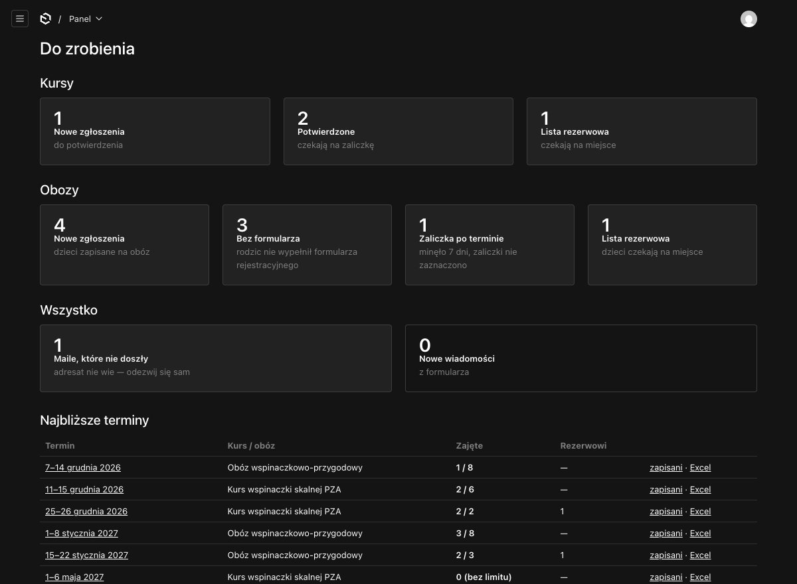
Pulpit panelu.
Część
Kafelek
Co liczy
Kursy
Nowe zgłoszenia
zapisy na kursy ze statusem „zgłoszony” — jeszcze ich nie potwierdziłeś
Potwierdzone
zapisy na kursy „potwierdzone” — miejsce jest, zaliczki jeszcze nie zaznaczyłeś
Lista rezerwowa
osoby czekające na zwolnienie miejsca na kursie
Obozy
Nowe zgłoszenia
dzieci ze statusem „zgłoszony”. Przy obozie to normalny stan aż do wpłaty zaliczki — nie musisz ich potwierdzać
Bez formularza
dzieci z miejscem, których rodzic nie wysłał jeszcze formularza rejestracyjnego (tylko obozy, które się jeszcze nie zaczęły)
Zaliczka po terminie
minęło 7 dni od maila z umową, a zaliczki nie zaznaczyłeś (tylko obozy, które się jeszcze nie zaczęły) — do nich warto zadzwonić
Lista rezerwowa
dzieci czekające na zwolnienie miejsca
Wszystko
Maile, które nie doszły
zapisy, przy których mail do kursanta albo rodzica nie wyszedł — ta osoba o czymś nie wie (rozdział 25)
Nowe wiadomości
wiadomości z formularza kontaktowego ze statusem „nowa”
Pod kafelkami jest tabela Najbliższe terminy — 12 najbliższych kursów i turnusów: ile miejsc zajętych na ile („5 / 6”), ile osób na liście rezerwowej i dwa linki — zapisani (lista osób tylko z tego terminu) i Excel (lista do pobrania). Kliknięcie daty otwiera sam termin.
„0 (bez limitu)” znaczy, że w terminie nie wpisano liczby miejsc (rozdział 8). Terminy, które minęły, same dostają status „zakończony” (w ciągu dwóch dni po ostatnim dniu) i znikają z tabeli.
Listy zapisów
Zapisy na kursy i Zapisy na obozy w menu otwierają listę ułożoną według daty terminu — od terminów sprzed miesiąca, najbliższe na górze, po 100 wierszy na stronę. Kolumna Uczestnik to kursant albo dziecko, Termin — kurs lub turnus z datami. Nad listą jest zdanie, które mówi, co właśnie oglądasz (np. „Zapisy na obozy · Bez formularza”) i które statusy wysyłają maila. Starsze zapisy znajdziesz, usuwając warunek daty w Filtrach.
Część I
Kursy
5. Jak kursant zapisuje się na kurs
Na stronie każdego kursu, w ramce z ceną, są najbliższe terminy z liczbą wolnych miejsc i przycisk Zapisz się na kurs. Wszystkie terminy są też w Terminarzu — przy każdym przycisk zapisu.
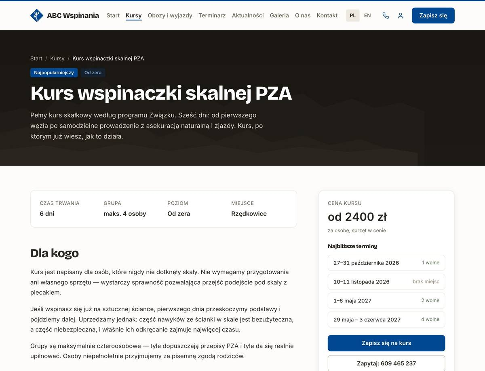
Strona kursu — z prawej terminy i przycisk zapisu.
Przycisk Zapisz się w nagłówku strony (na telefonie — pasek na dole ekranu) prowadzi:
ze strony głównej — do Terminarza (wszystkie terminy); z listy kursów — do Terminarza z samymi kursami; z listy obozów — z samymi obozami;
ze strony kursu — prosto do zapisu na ten kurs;
ze strony obozu — do formularza zapisu na obóz;
ze strony wyjazdu albo zajęć cyklicznych — do formularza kontaktowego z tematem „Obóz lub wyjazd” (na wyjazdy i zajęcia nie ma zapisu przez stronę).
Formularz zapisu na kurs
Kursant wybiera termin i wpisuje imię, nazwisko, adres e-mail i telefon (z numerem kierunkowym, np. +48). Może dopisać uwagi (np. „mam własny sprzęt”). Musi zaznaczyć zgodę na przetwarzanie danych.
Jeśli ma konto i jest zalogowany — nie wpisuje danych, wybiera tylko termin i zaznacza zgodę.
Jeśli nie ma konta — może zaznaczyć „Załóż mi konto z tych danych”. Dostanie wtedy osobny mail z linkiem do ustawienia hasła (link działa 2 godziny; konto bez ustawionego hasła znika po 7 dniach, zapis zostaje).
Na terminie bez wolnych miejsc formularz od razu mówi „brak miejsc — lista rezerwowa”.
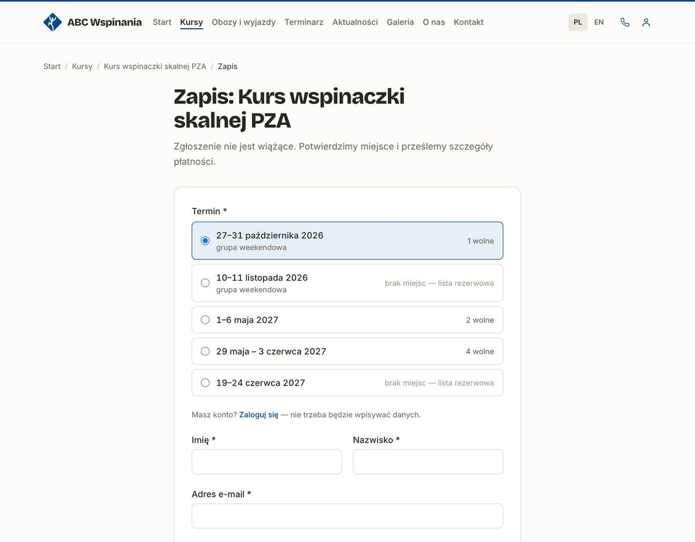
Formularz zapisu (widok bez logowania).
Co dzieje się po kliknięciu „Zapisz się”
Zapis pojawia się w Zapisach na kursy ze statusem „zgłoszony” (albo „lista rezerwowa”, gdy brak miejsc).
Kursant dostaje maila „Przyjęliśmy zgłoszenie: [kurs]” (albo „Lista rezerwowa: [kurs]”) z kursem, terminem i miejscem. Bez kwot — mail mówi, że szczegóły płatności prześlesz osobno.
Na skrzynkę kursową przychodzi „Nowy zapis: [osoba] — [kurs]” (albo „Lista rezerwowa: …”) z danymi, telefonem, uwagami i informacją, czy osoba ma konto. Odpowiedź na ten mail trafi wprost do kursanta.
Ten sam zapis dwa razy.
Gdy ktoś wyśle formularz drugi raz na ten sam termin z tym samym adresem e-mail (np. nie był pewien, czy poszło), strona odpowiada „przyjęte”, ale drugi zapis nie powstaje i nie idzie żaden mail. Zapis z rezygnacją się nie liczy — po rezygnacji można zapisać się na nowo. Jedyny wyjątek: jeśli przy drugim razie zaznaczy „Załóż mi konto”, a konta jeszcze nie ma — konto powstaje i przychodzi tylko mail z linkiem do hasła.
Zapisy bez konta nie przepadają.
Jeśli ktoś zapisze się bez konta, a kiedyś założy konto na ten sam adres e-mail, wszystkie te zapisy same przypną się do konta — zobaczy je w Moim koncie, także minione. Dzieje się to dopiero, gdy potwierdzi adres (kliknie link z maila albo się zaloguje), więc nikt nie zobaczy cudzych zapisów, wpisując cudzy adres. Wielkość liter w adresie nie ma znaczenia, ale literówka tak — zapis z błędnym adresem się nie przypnie.
6. Nowe zgłoszenie — co z nim zrobić
Kliknij kafelek Nowe zgłoszenia (część Kursy) albo wejdź w Zapisy na kursy.
Sprawdź osobę i jej uwagi. Jeśli trzeba — zadzwoń (telefon jest w zapisie).
Zmień status na „potwierdzony”. Kursant dostanie maila „Miejsce potwierdzone: [kurs]”.
Szczegóły płatności wyślij kursantowi sam (mailem albo SMS-em) — maile strony przy kursach nie podają kwot ani numeru konta.
Gdy wpłynie zaliczka — status „zaliczka wpłacona” (bez maila). Gdy całość — „opłacony”: przed pierwszym dniem kursu kursant dostanie „Płatność zaksięgowana: [kurs]”, od pierwszego dnia — nic (rozdział 7).
Najszybciej: status prosto z listy
Na liście zapisów status każdej osoby to rozwijana lista. Wybierasz nowy i gotowe — nie trzeba wchodzić w zapis ani nic zapisywać.
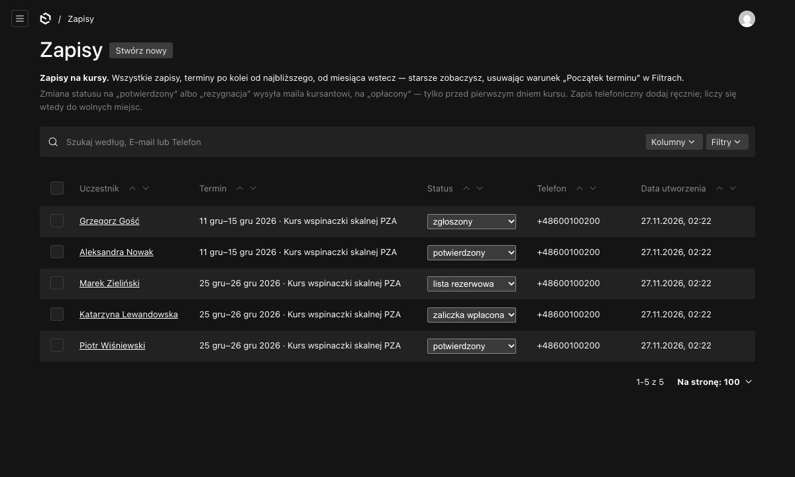
Lista zapisów — status zmienisz bezpośrednio w kolumnie „Status”.
Na liście panel pyta, zanim wyśle maila.
Przy zmianie na status, który wysyła maila, pojawia się okienko, np. „Zmienić status na „potwierdzony”? Kursant dostanie maila.” — to zabezpieczenie przed kliknięciem w zły wiersz. Przy „opłacony” pytanie brzmi „…Jeśli kurs jeszcze się nie zaczął, kursant dostanie maila.” — lista nie wie, czy kurs już trwa; po OK strona sprawdzi datę sama. OK zmienia status, Anuluj nie zmienia niczego. Okienka nie ma: przy statusie, który nie wysyła maila; przy statusie, który zapis już ma; przy zapisie bez adresu e-mail.
Albo w samym zapisie
Kliknięcie w imię i nazwisko na liście otwiera cały zapis: dane kontaktowe, uwagi kursanta i pole Notatki szkoły — tam zapiszesz cokolwiek dla siebie (kursant tego nie widzi). Po zmianach kliknij Zapisz w prawym górnym rogu.
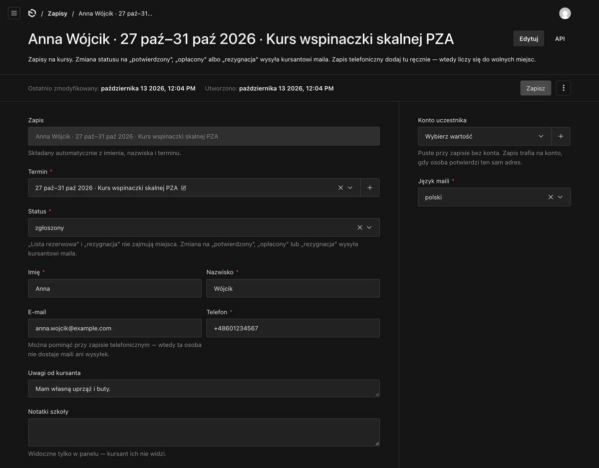
Zapis otwarty w panelu.
W otwartym zapisie panel NIE pyta.
Jeśli zmienisz tam status na taki, który wysyła maila, mail wyjdzie po kliknięciu Zapisz. Zmiana innych pól (notatki, telefon, uwagi, adres e-mail) nie wysyła niczego.
Przeniesienie na inny termin.
W otwartym zapisie możesz zmienić pole Termin i Zapisz. Miejsca przeliczą się na obu terminach. Kursant nie dostaje o tym maila — powiedz mu sam.
7. Statusy zapisu na kurs i maile
Status
Kiedy go ustawić
Zajmuje miejsce?
Mail do kursanta po zmianie na ten status
zgłoszony
ustawia się sam po zapisie przez stronę
tak
nie (dostał już „Przyjęliśmy zgłoszenie”)
potwierdzony
gdy potwierdzasz miejsce
tak
tak — „Miejsce potwierdzone: [kurs]”
zaliczka wpłacona
po wpłacie zaliczki
tak
nie
opłacony
po wpłacie całości
tak
tylko przed pierwszym dniem kursu — „Płatność zaksięgowana: [kurs]”
lista rezerwowa
ustawia się sam, gdy brak miejsc
nie
nie (dostał już „Lista rezerwowa”)
rezygnacja
gdy ktoś rezygnuje albo odwołujesz zapis
nie — zwalnia miejsce
tak — „Zapis anulowany: [kurs]” (także po kursie)
Maile idą w języku kursanta — po polsku albo po angielsku (rozdział 29). Przychodzą od „ABC Wspinania” z adresu kursy@; na każdy z nich kursant może odpowiedzieć, a odpowiedź trafi na skrzynkę kursową. Kursant z kontem ma w mailu przycisk Moje konto.
„Opłacony” w dniu kursu albo po nim — bez maila.
Większość osób płaci na miejscu, pierwszego dnia kursu, a status zmieniasz w trakcie albo po kursie. Mail „Płatność zaksięgowana” tylko by wtedy zdziwił. Dlatego:
przed pierwszym dniem kursu (np. przelew) — „opłacony” wysyła maila: kursant ma potwierdzenie, że pieniądze doszły;
od pierwszego dnia kursu (od północy czasu polskiego) — status się zmienia, ale mail nie wychodzi. Nic nie musisz zaznaczać — strona sprawdza datę sama.
Kursant z kontem i tak widzi status w Moim koncie — także „opłacone”.
Rezygnacja zamiast usuwania.
Gdy ktoś się wycofa, ustaw „rezygnacja” zamiast kasować zapis — zostaje ślad w historii, kursant dostaje „Zapis anulowany”, a miejsce i tak się zwalnia. Usunięcie zapisu też zwalnia miejsce, ale nie wysyła kursantowi maila.
Pomyłka w statusie?
Cofnięcie statusu nie „odwołuje” wysłanego maila. Jeśli przez pomyłkę ustawisz „rezygnacja” i od razu wrócisz na „potwierdzony”, kursant dostanie dwa maile: „Zapis anulowany” i „Miejsce potwierdzone”. Wtedy najlepiej do niego zadzwoń albo odpisz.
8. Wolne miejsca i lista rezerwowa
Ten rozdział dotyczy kursów i obozów tak samo. W każdym terminie (Treść → Terminy) jest pole Liczba miejsc.
Gdy je wpiszesz (np. 6) — strona sama liczy wolne miejsca: liczba miejsc minus zapisy, które zajmują miejsce (zgłoszony, potwierdzony, zaliczka, opłacony). Gdy wolnych zabraknie, termin sam przełącza się na „brak miejsc — lista rezerwowa”, a nowe osoby trafiają na listę rezerwową. Gdy miejsce się zwolni — termin wraca na „zapisy otwarte”.
Gdy je zostawisz puste — nic się nie liczy, a na stronie widać „zapytaj o miejsca”. Status terminu ustawiasz wtedy ręcznie: przy „brak miejsc — lista rezerwowa” nowe zapisy trafiają na listę rezerwową, przy „zapisy otwarte” — dostają miejsce.
Terminy „odwołany” i „zakończony” znikają ze strony i nikt się na nie nie zapisze. Strona nie zmienia ich statusu sama (poza oznaczeniem minionych terminów jako zakończone).
Możesz wpisać więcej osób, niż jest miejsc.
Zapis dodany ręcznie w panelu zawsze się zapisze — także ponad limit. Wolne miejsca pokażą wtedy 0, nie wartość ujemną.
Gdy zwolni się miejsce
Jeśli na terminie ktoś czeka na liście rezerwowej, a wolnych miejsc przybędzie — przez rezygnację, usunięty zapis, przeniesienie osoby na inny termin albo większą liczbę miejsc — przychodzi mail „Zwolniło się miejsce: [kurs lub obóz], [daty]” (przy kursie na skrzynkę kursową, przy obozie — na obozową) z całą listą rezerwową w kolejności zapisu, z telefonem i adresem każdej osoby.
Zdecyduj, kogo przyjmujesz (zwykle pierwszą osobę z listy) — możesz najpierw zadzwonić.
Zmień jej status z „lista rezerwowa” na „potwierdzony”. Dostanie maila, że ma miejsce (przy obozie także link do formularza — rozdział 17).
Nikt nie jest przesuwany z listy rezerwowej automatycznie — zawsze decydujesz Ty. Osoby z listy rezerwowej nie dostają maila o zwolnionym miejscu, dopóki nie zmienisz im statusu.
Mail „Zwolniło się miejsce” nie przychodzi, gdy na liście rezerwowej nikogo nie ma, ani przy terminie bez liczby miejsc.
9. Zapis przez telefon
Jeśli ktoś zapisał się u Ciebie przez telefon albo przez inne źródło, np. wspinanie.pl, dopisz go w panelu — wtedy liczy się do wolnych miejsc i nikt nie „zajmie” jego miejsca przez stronę.
Wejdź w Zapisy na kursy i kliknij Stwórz nowy (przycisk obok tytułu listy). Rodzaj zapisu ustawi się sam na „kurs”.
Wybierz Termin, ustaw Status (np. „potwierdzony”) i wpisz imię, nazwisko i telefon.
E-mail możesz zostawić pusty — wiele osób dzwoni i nie podaje adresu.
Pole Konto uczestnika zostaw puste („Wybierz wartość”). Jeśli ta osoba założy kiedyś konto na adres wpisany w zapisie, zapis przypnie się sam.
Kliknij Zapisz.
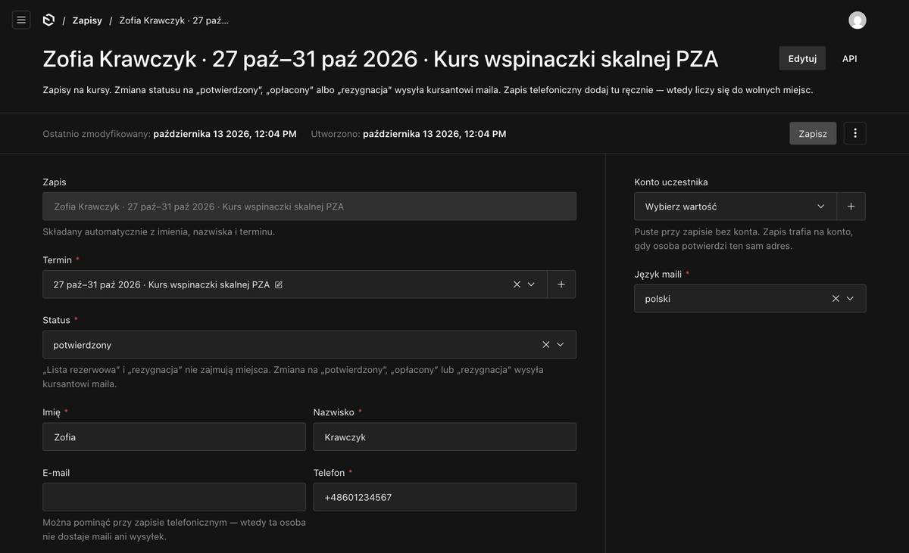
Zapis telefoniczny bez adresu e-mail.
Przy dodawaniu ręcznym nie wychodzą żadne maile — ani do kursanta, ani do Ciebie, niezależnie od wybranego statusu. Umówiliście się osobiście, więc oboje wiecie.
Bez adresu e-mail ta osoba nie dostaje nic, nigdy: ani maili o zmianie statusu, ani wysyłek. Panel nie pyta wtedy przy zmianie statusu, a na pulpicie nie pojawia się „mail, który nie doszedł”.
Jeśli adres wpiszesz, późniejsze zmiany statusu wysyłają maila jak przy każdym zapisie (rozdział 7) i osoba dostaje wysyłki do swojego terminu.
10. Termin: lista uczestników, Excel, odwołanie
Otwórz termin w Treść → Terminy (albo kliknij datę na pulpicie). Na liście terminów najbliższe są na górze. W terminie widzisz liczbę miejsc, wolne miejsca, status, dopisek, a niżej tabelę Zapisani — wszyscy zapisani na ten termin, także rezerwowi i rezygnacje.
Z prawej przycisk Pobierz listę uczestników (Excel). Przy kursie plik ma kolumny: Lp., imię, nazwisko, telefon, e-mail, status, uwagi od kursanta i data zapisu (przy obozie — inne, rozdział 22). Otwiera się w Excelu z polskimi znakami, telefon zostaje z plusem. Przydaje się do ubezpieczenia albo jako wydruk na skały.
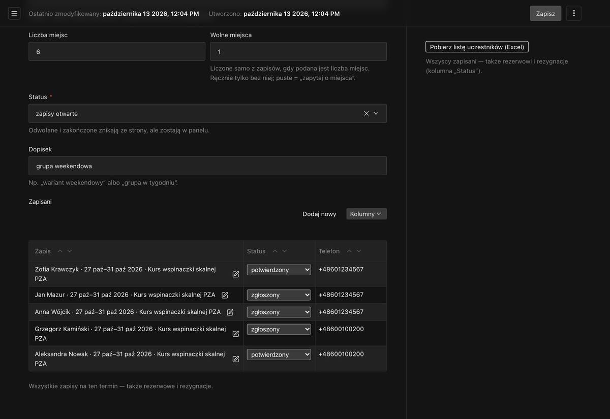
Termin w panelu: liczba miejsc, wolne miejsca, lista zapisanych i przycisk Excela.
Pola terminu, które warto znać
Kurs albo Obóz lub wyjazd — wypełnij jedno z nich, nigdy oba.
Od, Do — daty; „Do” puste przy zajęciach jednodniowych.
Miejsce — puste = strona weźmie miejsce z kursu lub obozu. Miejsce jest w mailach do kursantów i rodziców.
Cena dla tego terminu — puste = cena z kursu lub obozu. Przy obozie ta cena trafia do umowy i do kwoty dopłaty (rozdział 14).
Dopisek — np. „grupa w tygodniu”; widać go na stronie przy terminie.
Po kursie i przy odwołaniu
Po kursie nic nie musisz robić — termin sam dostanie status „zakończony” (w ciągu dwóch dni po ostatnim dniu) i zniknie ze strony. Zapisy zostają w historii, a kursanci z kontem widzą kurs w Archiwum Mojego konta. Nikt nie dostaje maila.
Odwołanie: terminu, na który są zapisy, nie da się usunąć — panel to zablokuje i podpowie, co zrobić. Ustaw jego status na „odwołany”: zniknie ze strony, a zapisy zostaną.
Odwołanie terminu i zmiana dat nie powiadamiają zapisanych.
Napisz do nich przez Wysyłki (rozdział 23) — wybierz ten termin i zaznacz „Także lista rezerwowa”. Statusy zapisów zostają takie, jakie były; jeśli chcesz, ustaw im „rezygnację” — ale wtedy każdy dostanie też mail „Zapis anulowany”.
Część II
Obozy
11. Obóz w czterech krokach
Zapis na obóz to Twoja procedura, tylko że maile i umowy robią się same. Cała droga działa bez konta — rodzic dostaje linki mailem. Konto jest dla chętnych (podgląd, umowa, stan płatności).
Krótki zapis na stronie (rozdział 12). Rodzic wybiera turnus, wpisuje dzieci i swoje dane. Każde dziecko z miejscem ma je od razu zarezerwowane. Rodzic dostaje maila z linkiem do formularza rejestracyjnego, Ty — maila „Nowy zapis na obóz”.
Formularz rejestracyjny (rozdział 13). PESEL, wzrost, zdrowie dziecka, adres rodzica, faktura, zgody — raz dla całego zgłoszenia. Bez formularza po 4 dniach rodzic dostaje jedno przypomnienie.
Umowa i zaliczka (rozdziały 14–15). Zaraz po pierwszym wysłaniu formularza rodzic dostaje umowę (PDF, z Twoją pieczątką) i dane do przelewu: 500 zł za dziecko w 7 dni. Rodzic odsyła podpisaną umowę na obozy@. Ty zaznaczasz wpłatę — rodzic dostaje maila, ile zostało do zapłaty. Po terminie bez wpłaty — jedno przypomnienie.
Mail przed obozem (rozdział 20). 16 dni przed turnusem strona przygotowuje szkic (zbiórka, co spakować, pusta karta kwalifikacyjna w załączniku) i daje Ci znać. Uzupełniasz miejsce i godziny, klikasz „Wyślij”. Kartę dziecko przywozi wypełnioną na obóz.
Co robisz Ty, a co strona.Ty: zaznaczasz wpłaty („zaliczka wpłacona”, „opłacony”), decydujesz o liście rezerwowej, wpisujesz numer z Kuratorium, uzupełniasz i wysyłasz mail przed obozem, dzwonisz do rodziców z kafelków „Bez formularza” i „Zaliczka po terminie”, wystawiasz faktury w swoim programie. Strona: liczy miejsca, wysyła linki do formularza, umowy, dane do przelewu, przypomnienia, maile o wpłacie, przygotowuje szkic maila przed obozem, usuwa dane o zdrowiu miesiąc po obozie.
Obóz, wyjazd, zajęcia cykliczne.
W Obozach i wyjazdach każda pozycja ma Rodzaj pozycji. Zapis przez stronę, formularz, umowa i mail przed obozem działają tylko dla rodzaju „obóz (kilkudniowy, z noclegiem)”. Przy wyjazdach i zajęciach cyklicznych przycisk zapisu prowadzi do formularza kontaktowego.
12. Zapis dzieci na stronie
Rodzic wchodzi w turnus (z Terminarza albo ze strony obozu) i klika Zapisz się. W formularzu:
wybiera turnus;
wpisuje imię i nazwisko dziecka; przyciskiem + Dodaj kolejne dziecko dopisuje rodzeństwo (do 6 dzieci naraz);
wpisuje swoje dane (rodzic lub opiekun): imię, nazwisko, e-mail, telefon; może dopisać uwagi;
może zaznaczyć „Załóż mi konto z tych danych”, zaznacza zgodę i klika Zapisz dziecko.
Zalogowany rodzic swoich danych nie wpisuje — biorą się z konta.
Gdy dzieci jest więcej niż wolnych miejsc
Formularz pokazuje ramkę „Wolne miejsca na tym turnusie: 1. Zapisujesz 2 dzieci.” i daje wybór:
pierwsze dzieci na wolne miejsca, reszta na listę rezerwową (zaznaczone z góry), albo
wszystkie na listę rezerwową — „pojadą razem albo wcale”.
Gdy wolnych miejsc nie ma wcale, ramki nie ma — wszystkie dzieci trafiają na listę rezerwową. Ty zawsze możesz zwiększyć liczbę miejsc w turnusie i zmienić status ręcznie.
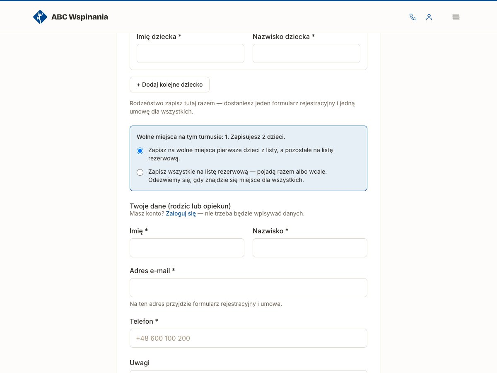
Formularz zapisu na obóz: dwoje dzieci, jedno wolne miejsce — rodzic wybiera, co dalej.
Co dzieje się po kliknięciu „Zapisz dziecko”
W Zapisach na obozy pojawia się zapis każdego dziecka — „zgłoszony” (z miejscem) albo „lista rezerwowa”.
Rodzic dostaje jeden mail za całe zgłoszenie: „Zapis na obóz: [dzieci] — [obóz]” z przyciskiem Wypełnij formularz rejestracyjny (jeden formularz dla wszystkich dzieci z miejscem). Dzieci z listy rezerwowej są w nim wymienione osobno — formularz dostaną, gdy zwolni się miejsce. Gdy wszystkie dzieci są na liście rezerwowej, temat brzmi „Lista rezerwowa: …” i przycisku formularza nie ma.
Jeśli zaznaczył „Załóż mi konto” i nie miał konta — osobny mail „Ustaw hasło do konta”.
Na skrzynkę obozową przychodzi „Nowy zapis na obóz: [dzieci] — [obóz]” (albo „Lista rezerwowa: …”) z dziećmi (rezerwowe z dopiskiem „LISTA REZERWOWA”), danymi rodzica, telefonem i uwagami. Przycisk w mailu otwiera listę zapisów tego turnusu. Odpowiedź trafi do rodzica.
Kiedy zapis jest „ten sam”.
Strona uznaje dziecko za już zapisane, gdy zgadzają się trzy rzeczy: ten sam turnus, ten sam adres e-mail rodzica i to samo imię i nazwisko dziecka (wielkość liter i dodatkowe spacje nie mają znaczenia). Wtedy nowy zapis nie powstaje i nie idzie żaden mail, a strona odpowiada tak samo jak za pierwszym razem. Zapis ze statusem „rezygnacja” się nie liczy: jeśli rodzic zrezygnował, a potem zapisze dziecko jeszcze raz na ten sam turnus, powstanie nowy zapis, a stary z rezygnacją zostanie obok. Jeśli w ponownym zgłoszeniu jest też nowe dziecko — powstaje tylko jego zapis, a maile mówią tylko o nim.
Skutki: literówka w imieniu dziecka („Zosia” i „Zośka”) albo inny adres rodzica dają drugi zapis — zobaczysz dwa wpisy i jeden usuniesz.
13. Formularz rejestracyjny
Link do formularza rodzic dostaje mailem — w mailu po zapisie, w przypomnieniu, po przesunięciu z listy rezerwowej albo gdy wyślesz go z panelu. Rodzic z kontem ma go też w Moim koncie (Wypełnij formularz rejestracyjny / Popraw formularz). Konto nie jest potrzebne — link wystarcza.
Co jest w formularzu
Część
Pola
Dla każdego dziecka osobno
PESEL (data urodzenia liczy się z niego sama), wzrost, uczulenia, przyjmowane leki, dieta, choroby i przeciwwskazania, zgoda na zdjęcia i nagrania — rodzic musi wybrać „wyrażam zgodę” albo „nie wyrażam zgody”, nic nie jest zaznaczone z góry
Raz dla całego zgłoszenia
adres rodzica (ulica, kod, miejscowość — do umowy i faktury), „Potrzebuję faktury” (a pod nim „Na firmę”: nazwa, NIP, adres firmy), zgoda na udział dziecka w zajęciach, zgoda na przetwarzanie danych i zdrowia dziecka
Formularz sprawdza PESEL i NIP (cyfrę kontrolną) — literówka nie przejdzie. Bez wyboru przy zdjęciach albo bez zgód formularz się nie wyśle, a wpisane dane zostają.
Pytanie do Ciebie: dziecko bez PESEL-u.
Nie wiem, na ile to realny problem. Czy zdarza się, że dziecko nie ma PESEL-u — np. cudzoziemiec? Dziś taki rodzic nie dokończy zapisu: krótki zapis na stronie przejdzie i dziecko dostanie miejsce, ale formularz rejestracyjny nie wyśle się bez poprawnego PESEL-u. Z PESEL-u strona liczy datę urodzenia, a bez wysłanego formularza nie wychodzi umowa ani dane do przelewu zaliczki. Datę urodzenia możesz wpisać ręcznie w zapisie dziecka, ale formularza w jego imieniu nie dokończysz. Jeśli to skrajny przypadek, który wystarczy załatwić telefonem, nic nie zmieniamy. Jeśli może się zdarzać — dopiszemy w formularzu drugą drogę (data urodzenia i numer paszportu zamiast PESEL-u). Daj znać, co wolisz.
Do kiedy działa
Od zapisu do dnia rozpoczęcia obozu. Rodzic może wracać tym samym linkiem i poprawiać (np. leki tydzień przed obozem). Przycisk Zapisz zmiany jest nieaktywny, dopóki czegoś nie zmieni.
Od pierwszego dnia obozu link już nie działa — liczy się papierowa karta kwalifikacyjna.
Dla dziecka z rezygnacją albo na liście rezerwowej formularz jest zamknięty (strona mówi dlaczego). Jedno zgłoszenie = jeden formularz: jeśli z rodzeństwa jedno zrezygnuje, w formularzu zostaje reszta.
Maile po wysłaniu formularza
Kiedy
Rodzic
Skrzynka obozowa
Pierwsze wysłanie
„Formularz przyjęty, dane do przelewu — [dzieci]” z umową PDF w załączniku (rozdział 14)
„Formularz rejestracyjny: [dzieci] — [obóz]”
Każda poprawka
nic — drugi raz danych do przelewu nie dostaje, termin zaliczki się nie przesuwa
„Formularz poprawiony: [dzieci] — [obóz]”
Danych o zdrowiu nie ma w żadnym mailu — ani do rodzica, ani do Ciebie. Są tylko w panelu: w zapisie dziecka po prawej, w ramce „Formularz rejestracyjny”, link zobacz dane (PESEL, zdrowie), i w Excelu turnusu (rozdział 22).
Przypomnienie i link z panelu
Przypomnienie idzie samo, jedno na każdy wysłany link: gdy od wysłania linku minęły 4 dni, a formularza nie ma (rano o 8:00, tylko przed obozem, tylko dzieci z miejscem i z adresem e-mail). Temat: „Przypomnienie: formularz rejestracyjny — [dzieci]”. Rodzeństwo z jednego zgłoszenia dostaje jedno przypomnienie. Dalej — dzwonisz Ty (kafelek „Bez formularza”).
„Wyślij rodzicowi link do formularza” — przycisk w zapisie dziecka, w ramce „Formularz rejestracyjny”. Panel zapyta, czy wysłać, i pokaże adres. Mail: „Formularz rejestracyjny — [dzieci]”. Link jest ten sam co wcześniej (stare maile dalej działają). Używaj go, gdy rodzicowi zginął mail albo zapis dodałeś ręcznie. Każde wysłanie linku z panelu (i po przesunięciu z listy rezerwowej) liczy 4 dni od nowa — jeśli formularz dalej nie przyjdzie, rodzic dostanie jeszcze jedno przypomnienie.
14. Umowa i dane do przelewu
Umowa robi się sama z Twojego wzoru „Umowa imprezy turystycznej — Jura Lato” i danych z zapisu i formularza: rodzic z adresem, telefonem i e-mailem, dzieci z turnusem, cena (cyfrą i słownie), zaliczka, data zawarcia, Twoja pieczątka z podpisem. Przy obozie z zaznaczonym „Uczestnicy biorą własne śpiwory” (Obozy i wyjazdy → wybrany obóz) umowa zamiast „łóżka z pościelą” wpisuje w świadczeniach „łóżka — uczestnicy zabierają własne śpiwory”. Zaznacz to przy każdym obozie, na którym nie ma pościeli — inaczej umowa obieca rodzicowi coś, czego nie będzie.
Jedna umowa na zgłoszenie — rodzeństwo zapisane razem jest w jednej umowie. Dziecko, które dostało miejsce później (z listy rezerwowej) albo zostało dopisane w panelu, ma własny formularz i własną umowę.
Wysyła się raz, z pierwszym formularzem, jako załącznik do maila z danymi do przelewu. Dzień wysłania = dzień zawarcia umowy, i od niego liczy się 7 dni na zaliczkę.
Rodzic drukuje umowę, podpisuje i odsyła skan albo zdjęcie na obozy@abcwspinania.info (tak mówi mail). Strona nie śledzi, czy podpisana umowa wróciła — to sprawdzasz Ty w skrzynce.
Data zawarcia i cena w umowie zostają takie, jak w dniu wysłania, nawet jeśli potem zmienisz cenę w panelu. Z tej samej ceny liczy się kwota dopłaty w mailach i w Moim koncie rodzica — wszystko się zgadza z podpisaną umową. Pozostałe dane (adres rodzica, lista dzieci) biorą się z aktualnego zapisu przy każdym pobraniu.
Gdzie pobrać umowę
Ty: w zapisie dziecka, ramka „Formularz rejestracyjny” → Pobierz umowę (PDF). Przed wysłaniem to podgląd z dzisiejszą datą i aktualną ceną. W zapisie widzisz też „Umowa wysłana” (data) i „Cena w umowie”.
Rodzic: załącznik w mailu, a rodzic z kontem — Pobierz umowę w Moim koncie (dopiero po wysłaniu).
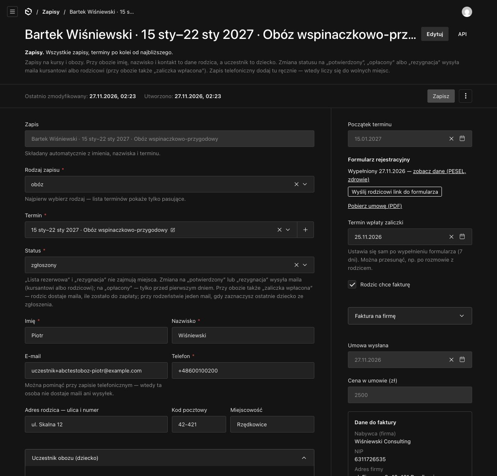
Zapis dziecka w panelu. Po prawej: formularz rejestracyjny (link do danych, „Wyślij rodzicowi link”, umowa), termin zaliczki, umowa wysłana, cena w umowie i dane do faktury.
Dane do przelewu w mailu
Zaliczka (500 zł × liczba dzieci z tego zgłoszenia), termin wpłaty (7 dni od maila), pozostała kwota (cena − 500 zł za każde dziecko, płatna najpóźniej w dniu rozpoczęcia obozu), odbiorca IQ SERVICE Krzysztof Wróbel / ABC WSPINANIA, numer konta PL89 1140 2004 0000 3002 7291 9707, tytuł przelewu „Obóz JURA [imię i nazwisko dziecka / dzieci]” i zasada zwrotu: rezygnacja do 30 dni przed obozem — zwrot całości, później zaliczka przepada. Mail mówi też, że pustą kartę kwalifikacyjną rodzic dostanie około dwóch tygodni przed obozem.
Gdy czegoś brakuje w panelu.
Turnus i obóz bez ceny — umowa nie idzie. Mail z danymi do przelewu idzie (bez pozostałej kwoty), a zapis dostaje notkę „Umowa nie poszła z danymi do przelewu” na kafelku „Maile, które nie doszły”. Wpisz cenę, pobierz umowę z zapisu i wyślij ją rodzicowi sam.
Brak pieczątki w „Ustawieniach obozów” — umowa idzie z pustym miejscem na podpis organizatora, a zapis dostaje notkę „Umowa poszła bez podpisu organizatora”. Wybierz pieczątkę w ustawieniach i wyślij rodzicowi umowę pobraną z zapisu.
15. Zaliczka i dopłata
Termin zaliczki
Ustawia się sam przy pierwszym wysłaniu formularza: 7 dni od tego dnia. Widzisz go w zapisie (pole „Termin wpłaty zaliczki”) i możesz go zmienić ręcznie — poprawka formularza przez rodzica go nie przesuwa. Przesunięty termin przesuwa też przypomnienie — ale tylko jeśli przypomnienie jeszcze nie wyszło; drugiego przypomnienia nie ma nigdy.
Dopóki rodzic nie wyśle formularza, terminu nie ma — i nie ma przypomnienia o zaliczce.
Termin nie zależy od tego, czy potwierdziłeś miejsce: „zgłoszony” i „potwierdzony” liczą się tak samo.
Gdy termin minie bez wpłaty
Rano o 8:00 rodzic dostaje jedno przypomnienie „Przypomnienie o zaliczce — [dzieci]” z danymi do przelewu (rodzeństwo — jedno na zgłoszenie). Drugiego nie będzie.
Dotyczy zapisów ze statusem „zgłoszony” albo „potwierdzony”, z adresem e-mail, na obóz, który się jeszcze nie zaczął.
Miejsce nie jest zwalniane. Dziecko pojawia się na kafelku „Zaliczka po terminie” — co dalej, decydujesz Ty (telefon, przesunięcie terminu w zapisie albo „rezygnacja”).
Zaznaczanie wpłat
Gdy wpłynie zaliczka — w Zapisach na obozy ustaw dziecku „zaliczka wpłacona”. Rodzic dostaje „Zaliczka wpłynęła: [dzieci]” z kwotą, która została do zapłaty („Do zapłaty zostało 2000 zł — najpóźniej w dniu rozpoczęcia obozu”) i numerem konta.
Gdy wpłynie całość — „opłacony”. Przed pierwszym dniem obozu rodzic dostaje „Obóz opłacony: [dziecko]”; od pierwszego dnia — bez maila (tak jak przy kursach).
Rodzeństwo: jeden mail o zaliczce, po zaznaczeniu ostatniego dziecka.
Dzieci z jednego zgłoszenia płacą jednym przelewem, a Ty zaznaczasz każde osobno. Mail „Zaliczka wpłynęła” wychodzi dopiero, gdy zaznaczysz ostatnie dziecko z miejscem z tego zgłoszenia — jeden, z imionami wszystkich i łączną kwotą. Panel mówi to w pytaniu: „Rodzic dostanie maila — przy rodzeństwie jednego, po zaznaczeniu ostatniego dziecka.”
Dziecko, któremu od razu ustawisz „opłacony” (bez „zaliczka wpłacona”), dostaje własnego maila „Obóz opłacony: [dziecko]” (jeśli to przed pierwszym dniem obozu), więc rodzic wie, że jest opłacone w całości. Do maila o zaliczce takie dziecko już nie wchodzi i nie czeka się na nie: mail wychodzi po zaznaczeniu ostatniego dziecka, które czekało na zaliczkę, wymienia tylko te dzieci i liczy kwotę do dopłaty tylko za nie. Przykład: troje dzieci, jedno od razu „opłacony”, dwóm zaznaczasz „zaliczka wpłacona” — rodzic dostaje „Obóz opłacony” za pierwsze, a po zaznaczeniu drugiego z pozostałych jeden mail o zaliczce za tę dwójkę z ich kwotą.
Jeśli dziecko, na które mail czekał, zrezygnuje, wróci na listę rezerwową albo jego zapis usuniesz — mail o zaliczce dla reszty wyśle poranne sprzątanie następnego dnia o 8:00 (nie od razu: rodzina, która rezygnuje w całości, nie dostanie „zaliczka wpłynęła” między dwiema rezygnacjami).
Ponowne ustawienie „zaliczka wpłacona” (np. z „opłacony” z powrotem) maila nie wysyła.
W Moim koncie rodzic widzi przy każdym dziecku stan płatności: „Zaliczka 500 zł do [data]”, „Zaliczka wpłynęła. Do zapłaty zostało … zł” (tu kwota na jedno dziecko) albo „Opłacone w całości.”
Kwota w mailach liczy się z ceny w umowie rodzica; zanim umowa wyjdzie — z ceny turnusu (pole „Cena dla tego terminu”), a gdy jej nie ma — z ceny obozu. Bez żadnej ceny mail mówi tylko „resztę zapłać najpóźniej w dniu rozpoczęcia obozu”, bez kwoty.
16. Statusy zapisu na obóz i maile
Statusy są te same co przy kursach, ale przy obozie potwierdzanie nie jest krokiem: dziecko ma miejsce od zapisu, a termin zaliczki liczy się od umowy. Maile mówią o obozie i o dziecku, idą od nadawcy „ABC Wspinania · Obozy”, a odpowiedzi trafiają na skrzynkę obozową.
Status
Kiedy go ustawić
Zajmuje miejsce?
Mail do rodzica po zmianie na ten status
zgłoszony
ustawia się sam po zapisie przez stronę; zostaje aż do zaliczki
tak
nie (z listy rezerwowej — tak, link do formularza, rozdział 17)
potwierdzony
niepotrzebny; możesz go użyć, jeśli chcesz dać rodzicowi znać, że wszystko gra
tak
tak — „Miejsce potwierdzone: [dziecko]” (sama informacja)
zaliczka wpłacona
po wpłacie zaliczki
tak
tak — „Zaliczka wpłynęła: [dzieci]” z kwotą do dopłaty; przy rodzeństwie jeden, po ostatnim dziecku (rozdział 15)
opłacony
po wpłacie całości
tak
tylko przed pierwszym dniem obozu — „Obóz opłacony: [dziecko]”
lista rezerwowa
ustawia się sam, gdy brak miejsc
nie
nie
rezygnacja
gdy rodzic rezygnuje albo odwołujesz zapis
nie — zwalnia miejsce
tak — „Zapis anulowany: [dziecko]” (każde dziecko osobno)
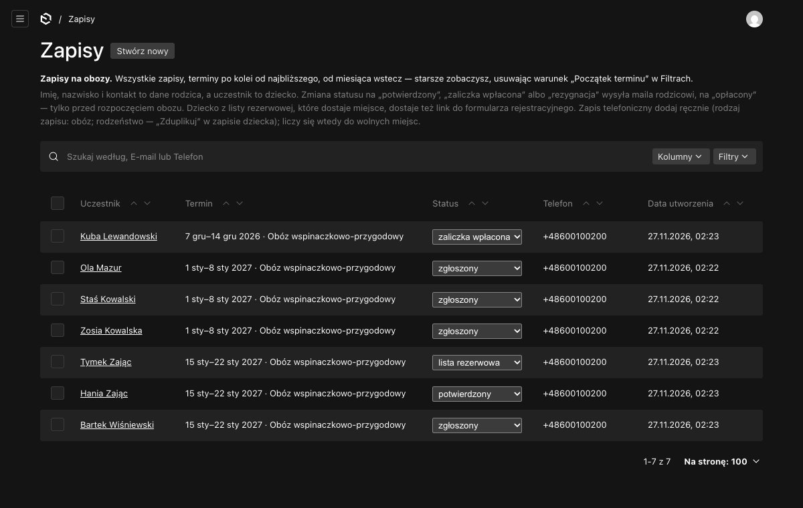
Lista „Zapisy na obozy” — uczestnik to dziecko; status zmienisz w kolumnie „Status”.
Rezygnacja i pieniądze.
Strona nie liczy zwrotów. Zasada z umowy i maila: rezygnacja do 30 dni przed obozem — zwrot całości, później zaliczka przepada. Zwrot robisz sam.
17. Lista rezerwowa na obozie
Działa jak przy kursach (rozdział 8): gdy miejsce się zwolni, a ktoś czeka, na skrzynkę obozową przychodzi „Zwolniło się miejsce: [obóz], [daty]” z kolejką dzieci (z telefonem i adresem rodzica). Nikt nie wskakuje sam.
Gdy przesuniesz dziecko z „lista rezerwowa” na status z miejscem, a rodzic nie wysłał jeszcze formularza, strona sama wyśle rodzicowi „Zwolniło się miejsce: [dziecko] — formularz rejestracyjny” z linkiem.
Zmieniasz z „lista rezerwowa” na…
Rodzic dostaje
„potwierdzony”
dwa maile: „Miejsce potwierdzone” i „Zwolniło się miejsce … — formularz rejestracyjny”
„zgłoszony”
jeden mail: „Zwolniło się miejsce … — formularz rejestracyjny”
Panel pyta też tutaj.
Przy każdej z tych zmian lista najpierw zapyta, np. „Zmienić status na „zgłoszony”? Rodzic dostanie maila z linkiem do formularza rejestracyjnego (chyba że rodzic już go wysłał).” Lista nie wie, czy formularz już przyszedł — gdy rodzic wysłał go wcześniej, linku nie ma.
Dziecko z listy rezerwowej ma własny formularz i własną umowę.
Nawet jeśli jego rodzeństwo ma miejsce od początku i wypełniło już formularz. Dzięki temu umowa rodzeństwa się nie zmienia, a nowe dziecko dostaje osobny przelew (500 zł) i osobną umowę.
18. Zapis obozowy przez telefon i rodzeństwo
Nowe dziecko przez telefon
Zapisy na obozy → Stwórz nowy. Rodzaj zapisu ustawi się sam na „obóz” (bo zaczynasz z listy obozów).
Wybierz Termin (lista pokazuje tylko turnusy obozów) i Status.
Imię, nazwisko, telefon i e-mail — rodzica. Niżej, w „Uczestnik obozu (dziecko)” — imię i nazwisko dziecka.
Zapisz.
Jeśli rodzic ma dostać formularz i umowę — w zapisie kliknij Wyślij rodzicowi link do formularza. Bez tego kroku strona nic nie wyśle: zapis dodany ręcznie nie wysyła maila, a przypomnienie o formularzu liczy się dopiero od wysłania linku.
Rodzeństwo dzwoni — „Zduplikuj”
Gdy rodzic, który już zapisał dziecko, dzwoni, że chce dopisać drugie: otwórz zapis pierwszego dziecka → menu ⋮ w prawym górnym rogu → Zduplikuj. Kopia ma tego samego rodzica, kontakt i turnus. Zmień w niej imię dziecka i Zapisz. Kopia nie ma PESEL-u ani danych zdrowotnych — wpisze je rodzic w formularzu nowego dziecka, do którego wyślesz mu link (niżej).
Kopia nie przejmuje niczego, co należało do pierwszego dziecka: status wraca na „zgłoszony”, nie ma formularza, daty urodzenia, zgody na zdjęcia, terminu zaliczki, umowy ani notki o mailu. Potem — Wyślij rodzicowi link do formularza: link otworzy formularz tylko nowego dziecka (osobna umowa, osobny przelew).
Tak samo „Zduplikuj” działa na terminie: kopia turnusu nie przejmuje numeru z Kuratorium ani znacznika, że szkic maila przed obozem już powstał.
Zapis bez adresu e-mail na obozie oznacza: żadnego linku do formularza, żadnej umowy, żadnych maili o wpłatach. Formularz i umowę załatwiasz wtedy na papierze. Umowę możesz pobrać z zapisu, ale bez formularza nie będzie w niej adresu rodzica.
19. Faktura
Strona faktur nie wystawia — wystawiasz je sam, w swoim programie (na firmę — przez KSeF). Strona zbiera do tego dane.
Rodzic zaznacza w formularzu „Potrzebuję faktury”, a jeśli na firmę — „Na firmę” i wpisuje nazwę, NIP (sprawdzany, zapisywany bez kresek) i adres firmy.
W zapisie dziecka, po prawej, pojawia się ramka Dane do faktury: rodzic z adresem albo firma z NIP-em, dziecko, data urodzenia, turnus, wpis do rejestru organizatorów (CEOTIPT nr 10677) i numer obozu z Kuratorium.
Numer z Kuratorium wpisujesz w turnusie (Terminy → turnus → pole „Numer zgłoszenia wypoczynku (Kuratorium)”), gdy Kuratorium przyjmie zgłoszenie. Dopóki go nie ma, ramka pokazuje link „wpisz w terminie obozu”.
20. Mail przed obozem i karta kwalifikacyjna
Mail przed obozem różni się dla każdego turnusu (miejsce zbiórki, daty, godziny), dlatego strona go nie wysyła sama — przygotowuje szkic i przypomina Ci o nim.
Co dzieje się samo
16 dni przed początkiem turnusu, rano o 8:00 (liczbę dni zmienisz w „Ustawieniach obozów”), w Wysyłkach powstaje szkic „Przed obozem: [obóz]”: Twój standardowy tekst z nazwą obozu, listą rzeczy do spakowania i miejscami do uzupełnienia w nawiasach kwadratowych — [miejsce zbiórki], [link do mapy], [dzień i data], [godziny], [telefon]… Linia o śpiworze zostaje tylko przy obozie z zaznaczonym „Uczestnicy biorą własne śpiwory”.
Odbiorcy: rodzice dzieci z miejscem na tym turnusie (bez listy rezerwowej), jeden mail na adres. Zaznaczone jest „Dołącz kartę kwalifikacyjną (PDF)”.
Na skrzynkę obozową przychodzi „Mail przed obozem czeka na uzupełnienie: [obóz], [daty]” z przyciskiem Otwórz szkic w panelu.
Szkic powstaje raz na turnus. Turnus, na którym nikt nie ma miejsca, czeka — strona sprawdzi go znowu następnego ranka. Turnus dodany później niż 16 dni przed startem dostanie szkic najbliższego ranka.
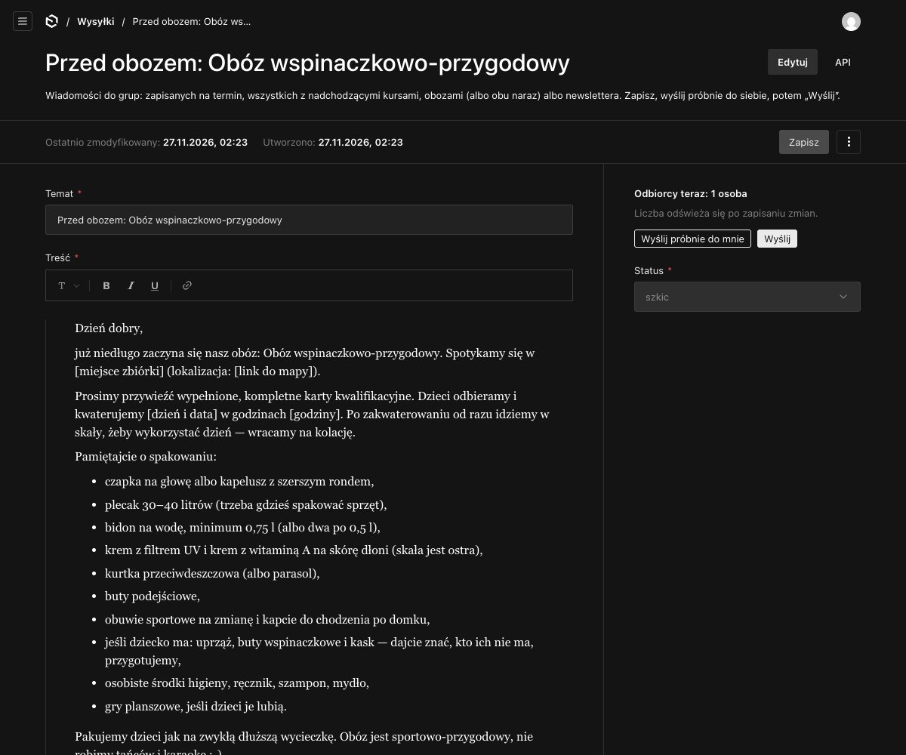
Szkic maila przed obozem — miejsca w nawiasach kwadratowych uzupełniasz sam.
Co robisz Ty
Otwórz szkic (przycisk w mailu albo Wysyłki → „Przed obozem: …”).
Uzupełnij wszystkie nawiasy. Możesz też zmienić dowolne zdanie albo całość, albo szkic usunąć.
Zapisz, potem Wyślij próbnie do mnie — sprawdź mail i załącznik.
Wyślij.
Strona pilnuje nawiasów i karty.
Dopóki w temacie albo treści zostaje jakiś [nawias], „Wyślij” odmawia: „Uzupełnij fragmenty w nawiasach: … — potem „Zapisz” i wyślij.” Dotyczy to każdej wysyłki, nie tylko przed obozem. „Wyślij próbnie do mnie” działa mimo nawiasów.
Gdy zaznaczone jest „Dołącz kartę kwalifikacyjną”, a w „Ustawieniach obozów” nie ma karty w PDF — „Wyślij” i „Wyślij próbnie” odmawiają z podpowiedzią.
Mail z kartą ma na samej górze ramkę „W ZAŁĄCZNIKU: PUSTA KARTA KWALIFIKACYJNA (PDF). Wydrukuj ją, wypełnij i przywieź na obóz.” — dokłada ją strona, nie wpisujesz jej sam. Bez zaznaczenia nie ma ani karty, ani ramki.
Mail idzie od „ABC Wspinania · Obozy”; „Odpowiedz” u rodzica trafia na skrzynkę obozową. Tak samo każda wysyłka do turnusu obozu, którą napiszesz sam.
Rodzic dziecka dopisanego po szkicu.
Lista odbiorców ustala się w chwili kliknięcia „Wyślij”, więc dziecko zapisane po powstaniu szkicu, ale przed wysłaniem, też dostanie mail. Dziecko zapisane po wysłaniu — już nie: wyślij mu kopię („Zduplikuj”, rozdział 23) albo napisz sam.
21. Ustawienia obozów i dane obozu w panelu
Ustawienia obozów (menu: Ustawienia)
Pole
Do czego
Pieczątka z podpisem do umowy
PNG albo JPG, najlepiej na białym tle. Wstawiana do każdej umowy. Bez niej umowy idą z pustym miejscem na podpis, a każdy zapis dostaje notkę na pulpicie. Usunięcie pliku w „Plikach prywatnych” czyści to pole — wtedy wybierz nowy plik tutaj.
Pusta karta kwalifikacyjna (PDF)
Dołączana do maila przed obozem. Gdy Kuratorium zmieni wzór — wgraj nowy plik i wybierz go tutaj.
Przypomnienie o mailu przed obozem — ile dni przed turnusem
Wpisujesz tutaj, w Ustawienia → Ustawienia obozów, i klikasz Zapisz. Domyślnie 16: tyle dni przed początkiem turnusu strona przygotowuje szkic maila „przed obozem” i daje Ci znać na skrzynkę obozową. Możesz wpisać dowolną liczbę całkowitą od 1 do 60. Im większa liczba, tym wcześniej dostajesz szkic i tym wcześniej możesz wysłać mail rodzicom.
Część standardowa maila przed obozem
Tekst szkicu. Fragmenty w nawiasach kwadratowych uzupełniasz w szkicu. Pusta linia = nowy akapit, linia zaczynająca się od „- ” = punkt listy. Tekst trafia do szkicu w chwili, gdy ten powstaje. Zmiana nie poprawi szkiców, które już leżą w Wysyłkach — tam poprawiasz ręcznie. Dotyczy dopiero szkiców tworzonych po zmianie. Przykład: szkic turnusu A powstał 6 dni temu, a turnus B zaczyna się za miesiąc i jego szkic jeszcze nie powstał. Dziś poprawiasz listę rzeczy do spakowania: szkic turnusu A zostaje ze starym tekstem (poprawiasz go w Wysyłkach), a szkic turnusu B dostanie już nowy.
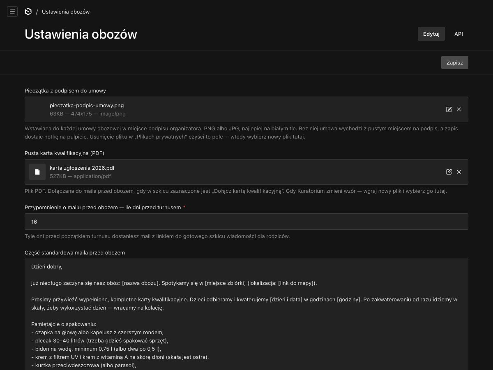
Ustawienia obozów (miniatura pieczątki ukryta na zrzucie).
Pieczątka i karta leżą w Plikach prywatnych — tych plików nie zobaczy nikt spoza panelu.
Obóz i turnus — pola, które wpływają na zapisy
Obóz → Rodzaj pozycji = „obóz” — bez tego nie ma zapisu przez stronę, formularza ani maila przed obozem.
Obóz → Cena i Turnus → Cena dla tego terminu — cena turnusu wygrywa. Trafia do umowy i do kwoty dopłaty. Bez ceny umowa nie idzie (rozdział 14).
Obóz → Uczestnicy biorą własne śpiwory — zmienia zapis w umowie i linię o śpiworze w szkicu maila przed obozem.
Turnus → Liczba miejsc — liczenie miejsc i lista rezerwowa (rozdział 8).
Turnus → Numer zgłoszenia wypoczynku (Kuratorium) — do danych do faktury (rozdział 19).
22. Turnus: Excel i formularze rejestracyjne
Excel turnusu (przycisk w turnusie albo link „Excel” na pulpicie) ma przy obozie własne kolumny: dziecko, data urodzenia, wzrost, uczulenia, leki, dieta, choroby, zgoda na zdjęcia, status, formularz, termin zaliczki, rodzic, telefon, e-mail, adres, faktura. To lista na obóz — są w niej dane o zdrowiu.
Pobrany plik nie znika sam.
Dane o zdrowiu w panelu usuwają się miesiąc po obozie, ale Excel zapisany na Twoim komputerze — nie. Usuń go, gdy nie będzie potrzebny, i nie wysyłaj go mailem.
Formularze rejestracyjne (menu: Zapisy) — dane z formularzy wszystkich dzieci: PESEL, wzrost, uczulenia, leki, dieta, choroby i treść zgód z datą. Najwygodniej oglądać je z zapisu dziecka (link zobacz dane). Usuwają się same miesiąc po zakończeniu obozu; zapis dziecka zostaje (dane do statystyk i rozliczeń — rozdział 28). Usunięcie zapisu dziecka usuwa też jego formularz.
Moje konto rodzica
Rodzic z kontem widzi przy każdym dziecku: imię dziecka i turnus, link Wypełnij formularz rejestracyjny albo Popraw formularz, Pobierz umowę (po wysłaniu) i stan płatności. Minione obozy są w Archiwum — bez linku do formularza i bez kwot.
Część III
Wspólne
23. Wysyłki — wiadomość do grupy osób
Zakładka Wysyłki (menu: Zapisy) służy do napisania jednej wiadomości do wielu osób naraz. Przykłady: godzina zbiórki dla grupy, zmiana miejsca, prognoza pogody, odwołanie terminu, nowe terminy dla newslettera.
Krok po kroku
Wejdź w Wysyłki i kliknij Stwórz nowy.
Wpisz Temat i Treść. Nad treścią są przyciski: pogrubienie (B), kursywa (I), podkreślenie (U) i link. Pod literą „T” są nagłówki i listy.
W polu Do kogo wybierz:
zapisani na jeden termin — potem wybierz termin (kursu albo turnus obozu);
wszyscy z nadchodzącymi kursami — każdy kursant z zapisem na kurs, który zaczyna się dziś albo później (termin ze statusem „zapisy otwarte” albo „brak miejsc”);
wszyscy z nadchodzącymi obozami (rodzice) — to samo dla obozów: rodzice dzieci zapisanych na nadchodzące turnusy;
wszyscy z nadchodzącymi zapisami — kursy i obozy — obie grupy naraz, np. „zmienił się numer telefonu szkoły”;
newsletter (potwierdzone adresy).
Domyślnie wiadomość dostają tylko osoby z miejscem. Zaznacz „Także lista rezerwowa”, jeśli ma ją dostać też lista rezerwowa (np. przy odwołaniu terminu). Osoby z rezygnacją nie dostają wysyłek nigdy.
Kliknij Zapisz. Dopiero wtedy pojawi się, do ilu osób pójdzie wiadomość, i przyciski wysyłki. Nic jeszcze nie wychodzi — to szkic, możesz go dokończyć później.
Kliknij Wyślij próbnie do mnie i sprawdź w swojej skrzynce (adres Twojego konta panelu), jak mail wygląda — w temacie będzie „[PRÓBA]”.
Kliknij Wyślij. Panel jeszcze raz zapyta, do ilu osób wysłać — potwierdź.
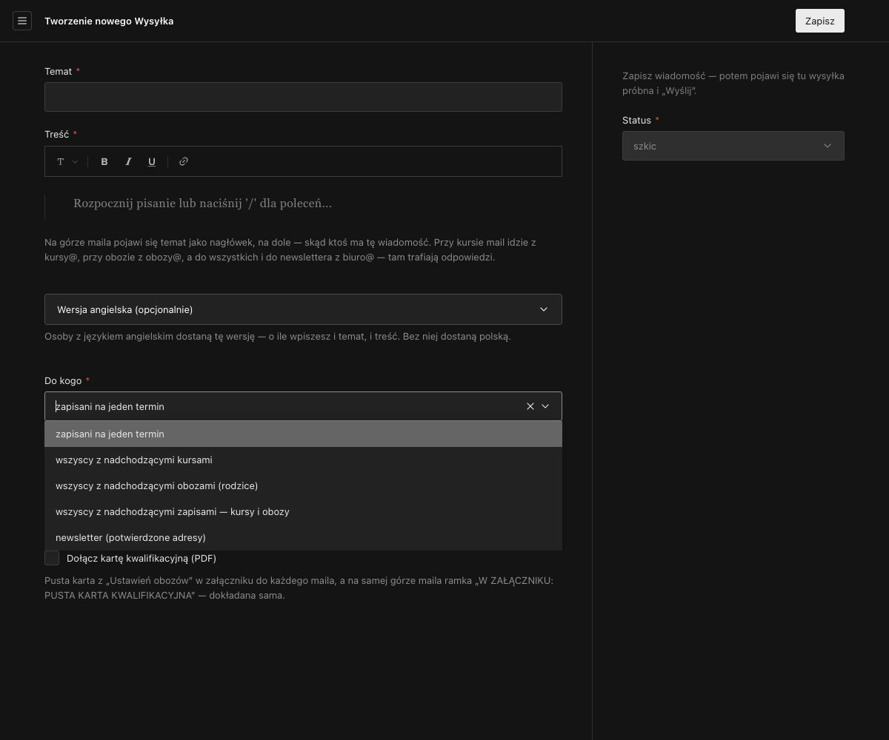
Pole „Do kogo” — pięć grup odbiorców.
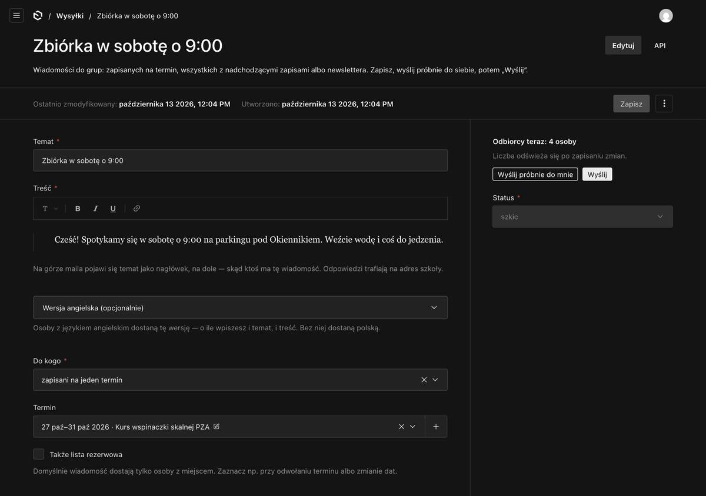
Zapisana wysyłka — liczba odbiorców i przyciski.
Jeden mail na adres.
Jeśli pod jednym adresem jest kilka zapisów (para na kursie, rodzeństwo na obozie, rodzic z dwoma turnusami), ten adres dostaje jedną wiadomość. Zapisy bez adresu e-mail są pomijane.
Najpierw „Zapisz”, potem „Wyślij” — panel tego pilnuje.
Wysyła się zawsze ostatnia ZAPISANA wersja. Jeśli coś zmienisz i nie zapiszesz, przyciski wysyłki zrobią się szare, a nad nimi pojawi się napis „Masz niezapisane zmiany”. Kliknij Zapisz — przyciski wrócą, a liczba odbiorców się odświeży.
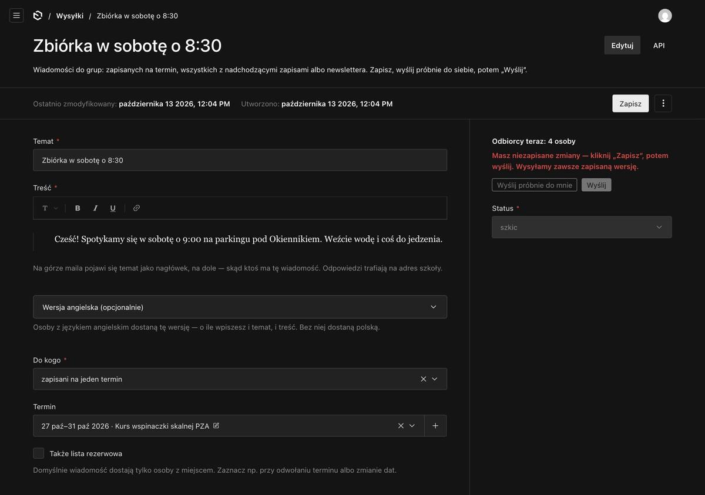
Zmieniony temat, jeszcze niezapisany — wysyłka zablokowana.
Wersja angielska
Pod treścią jest rozwijane pole Wersja angielska (opcjonalnie). Jeśli wpiszesz w nim temat i treść po angielsku, osoby z językiem angielskim dostaną tę wersję. Jeśli nie — dostaną polską. Panel przed wysłaniem powie, ile jest takich osób („W tym 1 po angielsku”).
Kto wysyła i dokąd idą odpowiedzi
Do terminu kursu albo do „nadchodzących kursów” — od „ABC Wspinania” z kursy@, odpowiedzi na skrzynkę kursową.
Do turnusu obozu albo do „nadchodzących obozów” — od „ABC Wspinania · Obozy” z obozy@, odpowiedzi na skrzynkę obozową.
Do „kursów i obozów” razem i do newslettera — od „ABC Wspinania” z biuro@, odpowiedzi na skrzynkę ogólną.
Pod treścią strona dopisuje drobnym drukiem, dlaczego ktoś dostał wiadomość (zapis na termin, nadchodzący kurs, nadchodzący obóz albo newsletter). Newsletter ma też link „Wypisz się z newslettera”; wysyłki do zapisanych go nie mają — to informacja o kursie, nie reklama.
Po wysłaniu
Maile wychodzą partiami po 20, co około 20 sekund — przy kilkunastu osobach to chwila. Widać postęp: „Wysyłka trwa”, potem „Wysłana” z liczbą wysłanych. Na dole tabela Odbiorcy: kto dostał, a do kogo mail nie doszedł i dlaczego.
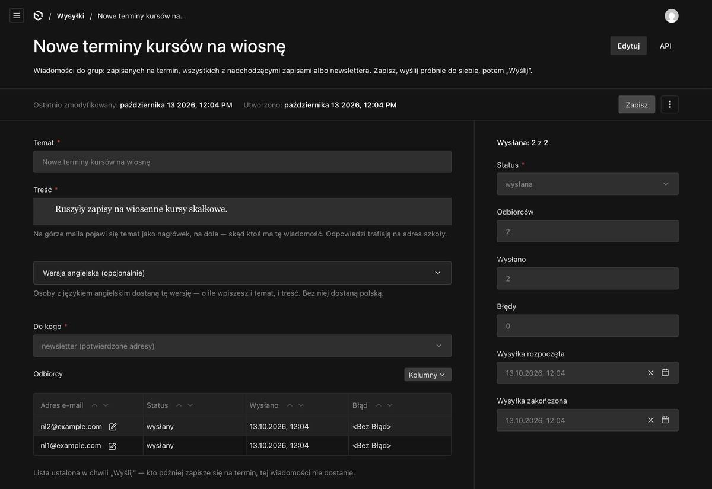
Wysyłka po wysłaniu — postęp i tabela odbiorców.
Lista odbiorców ustala się w chwili kliknięcia „Wyślij”: ktoś, kto zapisze się minutę później, tej wiadomości nie dostanie. Ktoś, kto w tym czasie wypisze się z newslettera — też nie.
Gdy skończy się dzienny limit maili, wysyłka sama się wstrzyma i spróbuje znowu za godzinę, aż wyjdzie. Gdy zawiedzie połączenie — strona próbuje jeszcze kilka razy co 10 minut. Zły adres odbiorcy to błąd tylko tego wiersza.
Podobna wiadomość jeszcze raz — „Zduplikuj”
Wysłanej wiadomości nie da się już zmienić — zostaje taka, jaką ludzie dostali. Żeby wysłać podobną, otwórz menu ⋮ (obok „Zapisz”) i wybierz Zduplikuj — powstanie kopia do edycji, z wyzerowanymi licznikami.
Kopia nie wyjdzie od razu: „Wyślij” jest zablokowane, a panel prosi, żebyś sprawdził treść i odbiorców. Zmień, co trzeba, i kliknij Zapisz — albo, jeśli wszystko się zgadza, Sprawdzone — odblokuj wysyłkę. To zabezpieczenie przed wysłaniem tej samej wiadomości drugi raz jednym kliknięciem. „Wyślij próbnie do mnie” działa od razu.
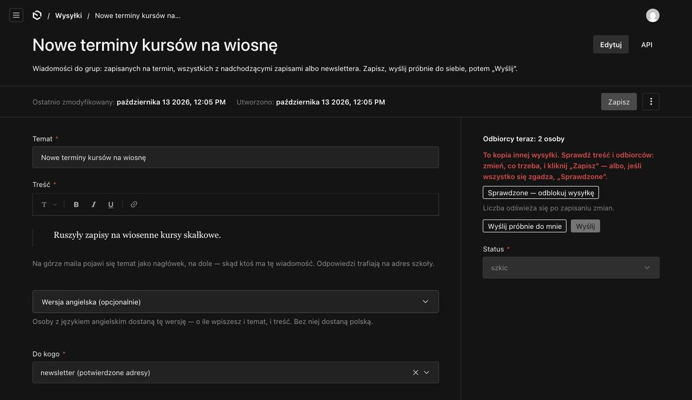
Kopia wysyłki czeka na sprawdzenie.
24. Newsletter
Na dole każdej strony jest pole zapisu na newsletter. Po wpisaniu adresu osoba dostaje maila „Potwierdź zapis na newsletter” i dopiero po kliknięciu w link i przycisk Potwierdzam zapis jest zapisana. To chroni przed wpisaniem cudzego adresu i przed botami.
Ten sam adres wpisany ponownie w ciągu 10 minut — drugi mail nie idzie. Później — idzie ten sam link jeszcze raz.
Adres już zapisany (potwierdzony) — nic się nie dzieje, mail nie idzie. Strona za każdym razem odpowiada tak samo, żeby nikt nie sprawdził, czy cudzy adres jest na liście.
Adres wypisany wcześniej, który zapisze się znowu — musi potwierdzić od nowa.
Zapis ze stopki strony ma zawsze język polski. Angielski możesz ustawić ręcznie w panelu, w adresie.
Adresy są w zakładce Newsletter (grupa „Kontakt”):
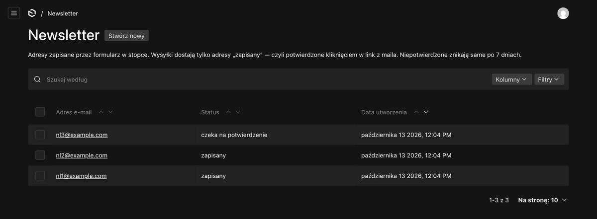
Lista adresów newslettera.
Status
Co znaczy
czeka na potwierdzenie
osoba się zapisała, ale nie kliknęła jeszcze w link. Nie dostaje wysyłek. Po 7 dniach adres znika sam.
zapisany
potwierdzony — dostaje wysyłki do newslettera
wypisany
osoba się wypisała. Adres zostaje z datą jako dowód, że wycofała zgodę — nie usuwaj go.
W każdym newsletterze na dole jest link „Wypisz się z newslettera” (otwiera stronę z przyciskiem Wypisz mnie — samo otwarcie niczego nie zmienia), a w Gmailu i innych skrzynkach — przycisk „Anuluj subskrypcję” obok nadawcy. Wypisanie działa od razu i nie wysyła żadnego maila.
Adresów do newslettera nie dodaje się ręcznie — każdy musi zapisać się sam i potwierdzić. Inaczej nie mamy dowodu zgody. Zapis na kurs albo obóz nie zapisuje na newsletter.
Newsletter wysyłasz przez Wysyłki (rozdział 23), wybierając „newsletter (potwierdzone adresy)”.
25. Maile, które nie doszły
Czasem mail do kursanta albo rodzica nie wyjdzie — najczęściej przez literówkę w adresie albo dlatego, że skończył się dzienny limit maili (rozdział 29). Takie maile o zapisie, statusie czy umowie nie ponawiają się same (inaczej niż wysyłki z Wysyłek, które po limicie dokończą się same). Zapis i tak jest w panelu, ale ta osoba nie wie, że np. ma potwierdzone miejsce — dlatego zajrzyj do kafelka „Maile, które nie doszły”.
Takie zapisy liczy kafelek „Maile, które nie doszły” na pulpicie. W samym zapisie, po prawej, widzisz pola „Mail, który nie doszedł” (który mail i dlaczego, prostymi słowami), „Kiedy” i „Załatwione”:
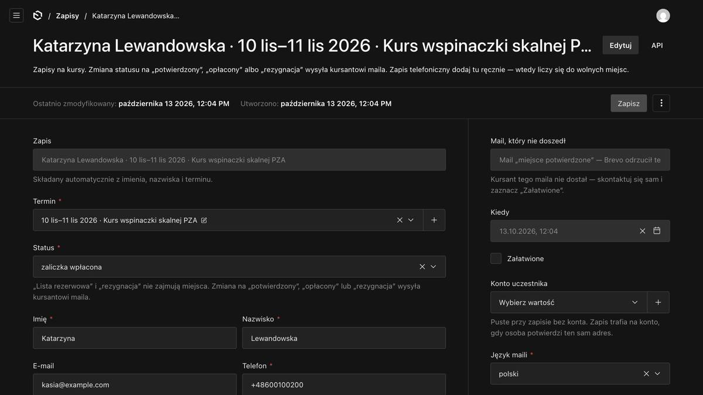
Zapis z mailem, który nie doszedł — przyczyna i pole „Załatwione” z prawej.
Co zrobić:
Zadzwoń albo napisz do tej osoby sam. Jeśli w adresie jest literówka — popraw go w zapisie.
Zaznacz „Załatwione” i kliknij Zapisz. Zapis zniknie z kafelka.
Kolejny problem z mailem przy tym samym zapisie dopisuje się do poprzedniego, dopóki nie zaznaczysz „Załatwione”; po zaznaczeniu następny zaczyna od nowa.
Dlaczego nie ma przycisku „wyślij ponownie”?
Bo najczęstszą przyczyną jest literówka w adresie (np. gmial.com) — drugi mail na ten sam zły adres też nie dojdzie. Telefon jest w każdym zapisie, więc najpewniej jest zadzwonić i przy okazji poprawić adres. Przy obozie link do formularza wyślesz ponownie przyciskiem w zapisie (rozdział 13).
Co trafia na ten kafelek
Kursy: potwierdzenie zapisu, „lista rezerwowa”, maile o statusie (potwierdzony, opłacony przed kursem, rezygnacja), link do ustawienia hasła przy zakładaniu konta z zapisu.
Obozy: mail po zapisie z linkiem do formularza, link do formularza (z panelu, po przesunięciu z listy rezerwowej, przypomnienie), mail z danymi do przelewu, przypomnienie o zaliczce, maile o statusie (potwierdzony, zaliczka, opłacony, rezygnacja), link do ustawienia hasła przy zakładaniu konta z zapisu, a także dwie notki, które nie są błędem wysyłki: „Umowa nie poszła z danymi do przelewu” (brak ceny) i „Umowa poszła bez podpisu organizatora” (brak pieczątki).
Nie trafiają tu: maile do Ciebie (np. „Nowy zapis”), maile konta (potwierdzenie adresu, nowe hasło), newsletter i wysyłki — wysyłki mają własną tabelę „Odbiorcy” (rozdział 23).
26. Konta uczestników i rodziców
Kursanci i rodzice mogą założyć konto na stronie (ikonka osoby w nagłówku albo przy zapisie). Konto daje szybszy zapis — bez wpisywania danych — i podgląd swoich zapisów w Moim koncie (Nadchodzące i Archiwum). Konta są w zakładce Uczestnicy.
Konto trzeba potwierdzić linkiem z maila„Potwierdź adres e-mail” (link działa 48 godzin; działa tylko najnowszy). Kto nie dostał maila, klika pod logowaniem „Nie dotarł mail z potwierdzeniem?” i dostaje nowy link. Niepotwierdzone konto znika samo po 7 dniach od ostatniego linku.
Rejestracja na adres, który już ma konto — strona mówi „sprawdź skrzynkę” jak zawsze, a właściciel adresu dostaje „Masz już konto” z przyciskiem logowania i linkiem do nowego hasła. Jego hasło się nie zmienia. Strona odpowiada zawsze tak samo celowo: gdyby wiedziała, że adres jest zajęty, ktoś obcy mógłby sprawdzać, czyje adresy mają konto w szkole.
Hasła nie widzisz i nie musisz go znać. Kto zapomniał hasła, klika na stronie logowania „Nie pamiętam hasła” i dostaje „Ustaw nowe hasło” (link działa 2 godziny i tylko raz). Dla adresu bez konta strona odpowiada tak samo, ale mail nie idzie.
Blokada po 5 złych hasłach: po pięciu nieudanych próbach logowanie blokuje się na 15 minut — także dobrym hasłem. Strona nie mówi, że konto jest zablokowane (żeby obcy nie dowiedział się, że takie konto istnieje). Po 15 minutach działa samo.
Konto zakłada się też przy zapisie („Załóż mi konto z tych danych”) — wtedy przychodzi „Ustaw hasło do konta”; ustawienie hasła potwierdza adres. Jeśli adres ma już niepotwierdzone konto — przychodzi nowy link potwierdzający. Jeśli ma potwierdzone — nic; zapis przypnie się przy najbliższym logowaniu.
W Moim koncie kursant sam poprawia imię, nazwisko i telefon (nowe dane trafiają do jego nadchodzących zapisów; minione i z rezygnacją zostają bez zmian, bez żadnych maili) i wybiera język maili („Wiadomości od nas”). Adresu e-mail sam nie zmieni — o to prosi Ciebie.
Kursant może sam usunąć konto (Moje konto → Usuń konto, z hasłem). Dostaje mail „Konto usunięte”. Jego zapisy — na kursy i obozy — zostają u Ciebie, już bez konta; usunięcie konta nie odwołuje zapisu i nie zwalnia miejsca. Jeśli kiedyś założy konto na ten sam adres, stare zapisy przypną się znowu.
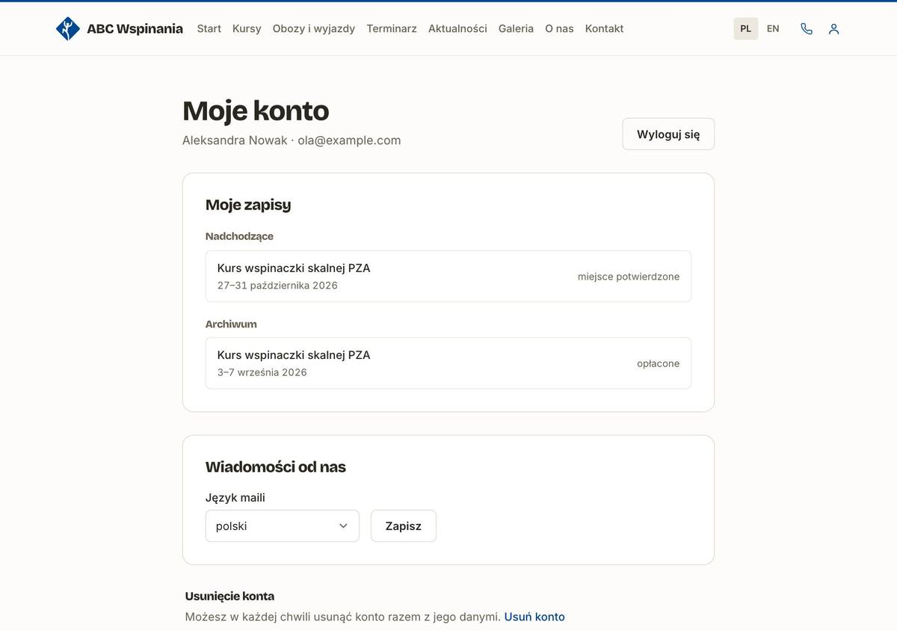
Moje konto — zapisy, dane i język maili.
Zmiana adresu e-mail w panelu. Adres jest zapisany osobno w każdym zapisie i osobno w koncie (Uczestnicy). Zmiana w jednym miejscu nie zmienia drugiego — jeśli rodzic albo kursant prosi o nowy adres, popraw go w koncie i w każdym jego zapisie. Panel nie wyśle przy tym żadnego maila i nie sprawdzi, czy nowy adres jest prawdziwy, więc wpisz go dokładnie.
Przykład: rodzic dzwoni, że zmienił adres ze „stary@” na „nowy@”. Jeśli zmienisz go tylko w koncie, konto będzie miało „nowy@”, ale jego zapisy dalej „stary@” — maile o zapisach (zaliczka, umowa) pójdą na stary adres. Jeśli zmienisz go tylko w zapisie, będzie odwrotnie: maile o zapisie pójdą na nowy adres, a maile o koncie (link do nowego hasła, potwierdzenie konta) dalej na stary — i rodzic, który już go nie używa, nie zresetuje sobie hasła.
27. Wiadomości z formularza kontaktowego
Gdy ktoś napisze przez formularz na stronie Kontakt, na skrzynkę ogólną przychodzi „Nowa wiadomość: [osoba] — [temat]” z treścią, adresem, telefonem i przyciskiem Otwórz w panelu. Wystarczy na niego odpowiedzieć — odpowiedź trafi wprost do tej osoby. Osoba pisząca nie dostaje żadnego maila — widzi podziękowanie na stronie.
W formularzu osoba wybiera temat: Kurs (wtedy też który), Obóz lub wyjazd albo Inna sprawa. Ze strony kursu, obozu albo wyjazdu temat jest wybrany z góry.
Wszystkie wiadomości są w zakładce Wiadomości (grupa „Kontakt”). Status — „nowa”, „w toku”, „załatwiona” — zmieniasz prosto z listy, jednym kliknięciem, bez pytania (nikt nie dostaje wtedy maila). Nowe liczy kafelek na pulpicie.
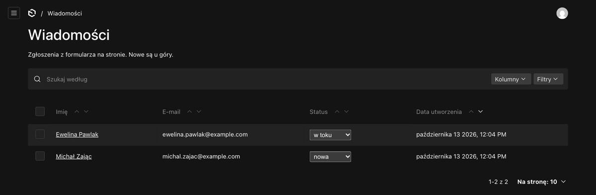
Wiadomości — status zmienisz w kolumnie „Status”.
Wiadomości nie dodaje się w panelu ręcznie — przychodzą tylko z formularza. Po 12 miesiącach znikają same (rozdział 28).
28. Dane osobowe — prośby z RODO i co znika samo
Każdy może poprosić o kopię swoich danych albo o ich usunięcie. Oba załatwisz sam, w zakładce Uczestnicy — nad listą jest rozwijane pole „Dane osoby — kopia albo usunięcie (prośby z RODO)”.
Rozwiń je, wpisz adres e-mail osoby i kliknij Sprawdź, co mamy. Zobaczysz, co jest pod tym adresem: konto, zapisy na kursy i obozy, wiadomości, newsletter. Nic się jeszcze nie usuwa.
Kopia:Pobierz kopię danych do wysłania osobie. Pobierze się plik, który otwiera się w przeglądarce jako czytelna strona „Twoje dane w ABC Wspinania” — po polsku, z datami, bez hasła. Przy obozie są w niej też formularze rejestracyjne dzieci (PESEL, zdrowie), adres i dane do faktury. Ten plik wysyłasz osobie w odpowiedzi na jej prośbę (albo drukujesz do PDF). Link „Wersja JSON” obok jest tylko na rzadką prośbę o przeniesienie danych do innej firmy.
Usunięcie: przepisz adres jeszcze raz w polu niżej (z literówką przycisk się nie włączy) i kliknij Usuń wszystkie dane tej osoby na zawsze. Znika wszystko pod tym adresem: konto, wszystkie zapisy (także nadchodzące — miejsca się zwalniają), formularze rejestracyjne, wiadomości, adres w newsletterze i ślady w wysyłkach. Osoba nie dostaje o tym maila. Z panelu tego nie da się cofnąć. Usuwanie dotyczy tylko danych uczestnika — Twoje konto do panelu i konta innych osób ze szkoły zostają nietknięte, nawet gdy wpiszesz adres, którego sam używasz. No dobra, jak będziesz bardzo chciał, to odzyskam te dane z kopii zapasowej, która co noc ląduje na serwerze (ostatnie 7 dni) i, zaszyfrowana, na Dysku Google (ostatnie 40 dni) — ale mam nadzieję, że nigdy nie będziemy musieli tam zaglądać :) To dość skomplikowany proces, ale w razie potrzeby zrobimy.
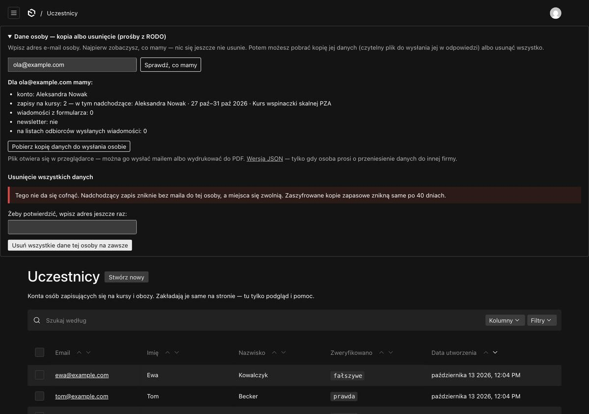
Dane osoby — najpierw sprawdzenie, potem kopia albo usunięcie.
Zapis telefoniczny bez adresu nie znajdzie się po adresie e-mail. Taki zapis usuwasz z listy zapisów: otwórz go → menu ⋮ → Usuń. Kopie zapasowe strony z usuniętymi danymi znikną same po 40 dniach — to też jest w polityce prywatności.
1 stycznia, 5 lat po końcu roku, w którym był kurs lub obóz (kurs z 2026 — 1 stycznia 2032). Zapis zostaje w statystykach — termin, status, data zapisu — ale bez imion, nazwisk, adresu, telefonu, notatek, adresu domowego i danych do faktury. Zapisy osób, które mają konto, zostają, dopóki konto istnieje.
Kopie zapasowe strony
po 40 dniach
Wypisani z newslettera zostają celowo — to dowód wycofania zgody (rozdział 24). Wszystko to opisuje polityka prywatności na stronie (link na dole każdej strony). Usuwanie danych nie wysyła nikomu maila.
29. Ważne rzeczy o mailach
Trzy skrzynki — każdy mail ma swoją
Każdy mail ze strony należy do jednej z trzech skrzynek. Skrzynka jest naraz nadawcą (z niej mail przychodzi), adresem odpowiedzi (tu trafia „Odpowiedz”) i miejscem powiadomień (tu dostajesz maile o nowych sprawach).
Skrzynka
Nadawca, jak widzi go odbiorca
Co do niej należy
kursy@abcwspinania.info
„ABC Wspinania”
Maile do kursantów o ich zapisach (przyjęcie, lista rezerwowa, potwierdzenie, płatność, rezygnacja). Do Ciebie: „Nowy zapis”, „Lista rezerwowa” i „Zwolniło się miejsce” przy kursach. Wysyłki do terminu kursu i do „nadchodzących kursów”.
obozy@abcwspinania.info
„ABC Wspinania · Obozy”
Wszystkie maile do rodziców: zapis, formularz, umowa i dane do przelewu, przypomnienia, zaliczka, statusy, „Ustaw hasło do konta” po zapisie na obóz. Do Ciebie: „Nowy zapis na obóz”, formularze (nowe i poprawione), „Zwolniło się miejsce” przy obozach, szkic maila przed obozem. Wysyłki do turnusu i do „nadchodzących obozów”. Tu wracają podpisane umowy.
biuro@abcwspinania.info
„ABC Wspinania”
Konta na stronie (potwierdzenie adresu, nowe hasło, „Masz już konto”, usunięcie konta), newsletter, wiadomości z formularza kontaktowego, wysyłki do „kursów i obozów” razem i do newslettera, maile o zmianie hasła w panelu.
„Odpowiedz” zawsze trafia do właściwej osoby: w mailach do kursantów i rodziców — na skrzynkę, z której mail przyszedł; w mailach do Ciebie o zapisie albo wiadomości — prosto do osoby, która się zapisała albo napisała.
Na górze każdego maila jest logo szkoły i nazwa ABC Wspinania.
Język: maile idą po polsku. Po angielsku dostaje je tylko osoba, która przestawi język w Moim koncie (albo której przestawisz go w panelu — w koncie, w zapisie albo w adresie newslettera). Język przeglądarki nie ma znaczenia. Maile do Ciebie są zawsze po polsku.
Limit: 300 maili dziennie — razem wszystkie maile strony ze wszystkich trzech skrzynek (zapisy, potwierdzenia, przypomnienia, wysyłki). Gdyby się skończył: wysyłka z „Wysyłek” wstrzyma się i dokończy sama; maile do kursantów i rodziców o ich zapisach trafią do kafelka „Maile, które nie doszły”, żebyś wiedział, do kogo zadzwonić. Pozostałe (konto, newsletter, maile do Ciebie) nie wyjdą i nie zostawią śladu — nic się jednak nie traci: zapis jest w panelu, a osoba, której mail nie doszedł, może spróbować jeszcze raz następnego dnia.
Maile mogą czasem trafić do spamu, zwłaszcza na początku. Jeśli ktoś mówi, że nic nie dostał — poproś, żeby zajrzał do folderu Spam (w Gmailu także do zakładki Oferty).
Mail nie jest wysyłany „zamiast” zapisu, tylko po nim. Jeśli wysyłka maila się nie uda, zapis, status, formularz czy wiadomość i tak są zapisane w panelu.
Maile, które sam wysyłasz ze swojej skrzynki
(np. odpowiedź kursantowi z kursy@) nie liczą się do limitu 300 i nie przechodzą przez stronę — to zwykła poczta.
Ściąga
Kto dostaje jakiego maila
30. Kto dostaje jakiego maila — pełna lista
Każda sytuacja, w której strona wysyła maila — i te, w których celowo nie wysyła nic. „Kursy”, „Obozy”, „Biuro” = skrzynki kursowa, obozowa i ogólna (rozdział 29) — na nie przychodzą maile do Ciebie. Teksty w cudzysłowie to tematy maili; [w nawiasach] — to, co strona wstawia sama.
Trzy zasady, które działają wszędzie: (1) zapis bez adresu e-mail nie dostaje nic; (2) zapis dodany ręcznie w panelu nie wysyła nic w chwili dodania; (3) zmiana pól innych niż status (notatki, telefon, uwagi, termin) nie wysyła nic tej osobie — przeniesienie na inny termin może najwyżej wysłać Tobie „Zwolniło się miejsce”.
właściciel konta (przy adresie — stary i nowy adres)
„Zmieniono hasło / adres e-mail do panelu — ABC Wspinania”
„Nie pamiętasz hasła?” w panelu
konto panelu
link do ustawienia nowego hasła panelu
Kopia albo usunięcie danych osoby (RODO)
—
nic (kopię wysyłasz sam)
Automatyczne usuwanie i anonimizacja danych
—
nic
31. Co strona robi sama o 8:00
Codziennie o 8:00 czasu polskiego strona robi „poranne sprzątanie”. Jeśli serwer był akurat wyłączony, ten dzień przepada, ale nic się nie gubi — następnego ranka strona nadrobi, bo wszystko liczy z dat.
Co
Komu i kiedy
Przypomnienie o formularzu rejestracyjnym
rodzic, jedno na każdy wysłany link, gdy minęły 4 dni od linku, a formularza nie ma (dzieci z miejscem, obóz przed startem)
Przypomnienie o zaliczce
rodzic, raz, gdy minął termin zaliczki, a status to wciąż „zgłoszony” albo „potwierdzony” (obóz przed startem)
Zaległy mail „Zaliczka wpłynęła”
rodzic rodzeństwa, gdy dziecko, na które czekał mail, odpadło (rozdział 15)
Szkic maila przed obozem
skrzynka obozowa; 16 dni (wg ustawień) przed turnusem, raz na turnus
Oznaczenie minionych terminów jako „zakończony”
bez maili; 1–2 dni po ostatnim dniu; „odwołany” zostaje
Usunięcie niepotwierdzonych kont i zapisów na newsletter
bez maili; po 7 dniach
Usunięcie starych wiadomości z formularza
bez maili; po 12 miesiącach
Usunięcie formularzy rejestracyjnych
bez maili; miesiąc po obozie
Anonimizacja starych zapisów
bez maili; 1 stycznia, po 5 latach (rozdział 28)
Wysyłki z zakładki „Wysyłki” nie czekają na 8:00 — wychodzą od razu po „Wyślij”. Maile po zapisie, formularzu i zmianie statusu też idą od razu.
32. Kopie zapasowe
Strona robi kopie zapasowe sama, co noc. Nie musisz niczego klikać ani pamiętać — ten rozdział jest po to, żebyś wiedział, co jest zabezpieczone i co zrobić, gdy coś pójdzie nie tak.
Co
Jak
Kiedy
codziennie o 3:00 w nocy
Co jest w kopii
cała baza (zapisy, konta, wiadomości, newsletter, teksty i ustawienia) oraz zdjęcia i pliki wgrane przez panel — razem z pieczątką do umów i kartą kwalifikacyjną. Zdjęcia kopiują się tylko wtedy, gdy coś się w nich zmieniło (najpóźniej co 30 dni).
Gdzie
na serwerze — ostatnie 7 dni; na Dysku Google, zaszyfrowane — ostatnie 40 dni. Starsze znikają same.
Kto ma dostęp
ja. Do kopii sięga się dopiero przy poważnej awarii (np. gdy serwer przestaje działać albo ginie baza), a wtedy liczy się czas — dlatego odtwarzaniem zajmuję się ja i mam przygotowane wszystko, co potrzebne, żeby zadziałać od razu. Ty też masz dostęp do serwera, więc teoretycznie możesz tam zobaczyć kopie z ostatnich 7 dni, ale odtworzenie z nich to robota dla mnie — nie rób tego sam. Kopie na Dysku Google są zaszyfrowane, a klucze do nich mam ja. W panelu nie ma przycisku do odtwarzania kopii.
Gdy kopia się nie zrobi
osobny alarm daje mi znać, jeśli kopii jednej nocy zabraknie. Co jakiś czas sprawdzam też na próbę, że z kopii da się odtworzyć dane.
Co z tego wynika dla Ciebie
Kopia jest „z nocy”. Wszystko, co zrobisz w ciągu dnia (nowy zapis, zmiana statusu, poprawiony tekst), trafia do kopii dopiero o 3:00. Gdyby serwer zupełnie padł, odtworzę stronę z ostatniej kopii i stracimy najwyżej zmiany z ostatniej doby.
Usunąłeś coś przez pomyłkę (zapis, zdjęcie, tekst)? Napisz do mnie od razu, najlepiej tego samego dnia — im szybciej, tym łatwiej, a rzecz z wczorajszej nocy jest w kopii. Odzyskanie jednej rzeczy z kopii to dość skomplikowany proces, ale w razie potrzeby zrobię. Rzeczy dodanej i usuniętej tego samego dnia, między dwiema kopiami, w kopii nie będzie.
Prośba o usunięcie danych (RODO). Dane usunięte w „Danych osoby” (rozdział 28) znikają ze strony od razu, ale zostają jeszcze w kopiach i same z nich znikają po 40 dniach. To jest też w polityce prywatności, więc na pytanie osoby odpowiedz: „usunięte, kopie zapasowe znikną po 40 dniach”.
Co robisz Ty? Nic. Kopie robią się same i same się czyszczą. Daj mi znać tylko wtedy, gdy coś zniknęło, czego nie powinno.
33. Pytania i odpowiedzi
Zmieniłem status przez pomyłkę. Czy mail już poszedł?
Jeśli to był status z maila (rozdziały 7 i 16) i kliknąłeś OK albo Zapisz — tak, od razu. Cofnięcie statusu go nie zatrzyma, a może wysłać kolejny (np. powrót na „potwierdzony” = „Miejsce potwierdzone”). Najlepiej odpisz tej osobie albo zadzwoń.
Kursant mówi, że nie dostał maila. Co sprawdzić?
Najpierw folder Spam i zakładkę Oferty. Potem otwórz jego zapis: czy adres nie ma literówki i czy po prawej nie ma „Mail, który nie doszedł”. Przy obozie link do formularza wyślesz ponownie przyciskiem w zapisie.
Dopisałem kogoś przez telefon. Czy coś dostanie?
W chwili dodania — nie, nic. Z adresem e-mail dostanie maile przy późniejszych zmianach statusu i wysyłki. Bez adresu — nic, nigdy. Przy obozie formularz i umowę wyślesz przyciskiem „Wyślij rodzicowi link do formularza”.
Czy muszę potwierdzać dzieci na obozie?
Nie. Dziecko ma miejsce od zapisu, umowa i termin zaliczki zależą od formularza. „Potwierdzony” wysyła tylko informacyjny mail „Miejsce potwierdzone”. Ty zaznaczasz wpłaty.
Rodzic nie wpłacił zaliczki w 7 dni. Czy traci miejsce?
Nie. Dostaje jedno przypomnienie, dziecko pojawia się na kafelku „Zaliczka po terminie”, a decyzja jest Twoja. Możesz przesunąć termin w zapisie („Termin wpłaty zaliczki”) albo ustawić „rezygnacja”.
Zaznaczyłem zaliczkę jednemu z rodzeństwa i mail nie przyszedł. Błąd?
Nie. Przy rodzeństwie z jednego zgłoszenia mail wychodzi po zaznaczeniu ostatniego dziecka — jeden za wszystkie.
Rodzic zgubił umowę.
Rodzic z kontem pobierze ją w Moim koncie. Bez konta — pobierz ją z zapisu dziecka (Pobierz umowę (PDF)) i wyślij mu sam. Data zawarcia i cena będą takie jak w pierwszej.
Zmieniła się cena obozu. Co z wysłanymi umowami?
Wysłane umowy i ich cena zostają bez zmian. Kwota dopłaty w mailach i w Moim koncie tych rodziców też zostaje liczona ze starej ceny — tak jak w ich umowie. Nowa cena trafi do umów, które wyjdą od teraz (i do ich kwot).
Rodzic chce poprawić leki dzień przed obozem.
Może — tym samym linkiem z maila albo z Moje konto. Ty dostaniesz „Formularz poprawiony”. Od pierwszego dnia obozu formularz jest zamknięty — wtedy liczy się papierowa karta.
Ktoś zrezygnował, a mam listę rezerwową. Czy ktoś wskoczy sam?
Nie. Dostajesz „Zwolniło się miejsce” z kolejką i sam zmieniasz status wybranej osobie.
Odwołuję termin. Czy zapisani się dowiedzą?
Sami — nie. Ustaw termin na „odwołany” i napisz do nich przez Wysyłki (ten termin + „Także lista rezerwowa”).
Czy szkic maila przed obozem może wyjść sam, z nawiasami?
Nie. Szkic nigdy nie wychodzi sam, a „Wyślij” odmawia, dopóki zostaje jakiś [nawias].
Jak napisać tylko do kursantów albo tylko do rodziców z obozów?
W Wysyłkach, w polu „Do kogo”: „wszyscy z nadchodzącymi kursami” albo „wszyscy z nadchodzącymi obozami (rodzice)”. Do jednego kursu albo turnusu — „zapisani na jeden termin”. Do wszystkich naraz — „kursy i obozy”.
Ktoś usunął konto. Czy jego zapis na kurs przepadł?
Nie. Zapis zostaje w panelu bez konta, miejsce dalej jest zajęte. Żeby go odwołać — ustaw „rezygnacja”.
Ktoś prosi o usunięcie danych. Czy dostanie potwierdzenie mailem?
Nie — strona nic nie wysyła. Odpisz mu sam, że dane usunięte (kopie zapasowe znikną po 40 dniach).
Gdzie zmienić tekst standardowy maila przed obozem albo kartę kwalifikacyjną?
Ustawienia → Ustawienia obozów. Zmiana działa na szkice, które powstaną od teraz; gotowy szkic poprawiasz w nim samym.
34. Czego strona nie robi
Płatności przez stronę — strona nie przyjmuje płatności ani nie sprawdza konta bankowego. Wpłatę zaznaczasz statusem. Przy kursach dane do przelewu podajesz sam; przy obozach są w mailu z umową.
Przesuwania z listy rezerwowej — zawsze decydujesz Ty.
Zwalniania miejsca za brak zaliczki — tylko przypomina, raz.
Powiadamiania o odwołaniu terminu albo zmianie dat — piszesz przez Wysyłki.
Przypominania o dopłacie reszty za obóz — kwota jest w mailu „Zaliczka wpłynęła” i w Moim koncie; dalej pilnujesz sam.
Sprawdzania, czy podpisana umowa wróciła — wraca na obozy@, sprawdzasz w skrzynce.
Wystawiania faktur i liczenia zwrotów — dane do faktury są w zapisie, fakturę i zwrot robisz sam.
Karty kwalifikacyjnej online — karta zostaje papierowa (wzór Kuratorium); strona wysyła pustą w PDF przed obozem.
Zmiany adresu e-mail przez kursanta — kursant prosi o to Ciebie, a Ty poprawiasz adres w panelu.
Ponownego wysłania maila, który nie doszedł — dzwonisz sam (rozdział 25).
Całej strony po angielsku — po angielsku jest strona główna /en, polityka prywatności i maile dla osób z językiem angielskim. Reszta strony jest po polsku.
Na koniec
Gratulacje, że dotarłeś aż tutaj! :) Jeśli momentami było ciężko, pomyśl, ile decyzji musiałem przemyśleć, żeby dojść do tego miejsca.
Jeśli coś w panelu albo w mailach działa inaczej, niż tu piszę, albo czegoś tu brakuje — daj mi znać: napisz, w którym rozdziale, i co widzisz. A jeśli coś nadal jest niejasne, przygotuj pytania. Dołączę je do instrukcji, wygeneruję ją na nowo i podeślę Ci jeszcze raz.